Chapter 5: Storage Interfaces, Protocols & the I/O Stack¶
A drive is only as useful as the path that connects it to the processor. This chapter follows that path: the SCSI and ATA command languages, SATA, SAS and PCIe links, the NVMe protocol and its 2.x specification family, networked block storage over NVMe-oF, Fibre Channel and iSCSI, CXL memory expansion and external USB and Thunderbolt drives. It then climbs into the operating system — page cache, block layer, io_uring and SPDK — and finishes with the maths of queue depth and latency, direct paths into GPUs, and the health data drives report about themselves.
5.1 SCSI & SAS: The Enterprise Command Language and Its Serial Link¶
SCSI (Small Computer System Interface, said 'scuzzy') is a standard set of commands a computer uses to ask a storage device to read, write or describe itself. The old parallel SCSI cables are gone, but the command language lives on inside SAS (Serial Attached SCSI), Fibre Channel, iSCSI and USB drives. SAS is the point-to-point serial cable system that carries SCSI commands to server disks at 12 or 24 Gb/s.

Think of it like…
SCSI is a standard restaurant order slip: whether a waiter, a tablet or a phone call carries it (the transport), the kitchen reads the same boxes — dish, quantity, table. SAS is the fast, dedicated conveyor belt that carries those slips to the kitchens of a big hotel.
Real-world example
Priya, a junior admin at fictional Harbourline Logistics, hot-plugs an 8 TB SAS disk into a server. Linux sends INQUIRY and learns the vendor, model and firmware; READ CAPACITY(16) reports 15,628,053,168 blocks of 512 bytes. Weeks later a read fails and the drive answers CHECK CONDITION with sense key 3 (MEDIUM ERROR), which Priya spots in the kernel log and uses to justify a replacement.
How it works¶
- The initiator (the host bus adapter) builds a Command Descriptor Block (CDB) of 6-16 bytes: opcode, starting LBA, length and flags.
- A transport — SAS, Fibre Channel, iSCSI or USB — carries the CDB to a target port and a logical unit (LUN).
- The target executes the command and moves data in or out using the transport's data frames.
- It returns a status byte: GOOD (00h) or CHECK CONDITION (02h) plus sense data explaining the error.
- On SAS, expanders route frames so one HBA port can reach dozens or hundreds of drives; dual-ported drives give two independent paths.
Who uses it
Server and storage administrators, SAN engineers, HBA/RAID-controller and driver developers, and support staff reading kernel logs or vendor support bundles.
Key takeaway
Memorise initiator → target → LUN, the opcodes INQUIRY 12h, READ(10) 28h, WRITE(10) 2Ah, and that SAS-3 runs at 12 Gb/s and SAS-4 at 24 Gb/s ('24G SAS').
Going deeper
- INCITS T10 maintains SCSI: SAM defines the architecture, SPC the commands every device supports, SBC block devices, SSC tape, SES enclosures; transports such as SAS (SAS-4, SPL-4) are separate documents.
- CDB size limits addressing: READ(6) has a 21-bit LBA, READ(10) a 32-bit LBA (2 TiB at 512-byte blocks) and READ(16) a 64-bit LBA, which is why large disks need 16-byte commands.
- Sense keys summarise errors — 2 NOT READY, 3 MEDIUM ERROR, 4 HARDWARE ERROR, 5 ILLEGAL REQUEST, 6 UNIT ATTENTION — and ASC/ASCQ pairs refine them, e.g. 11h/00h means unrecovered read error.
- Linux names each SCSI device Host:Channel:Target:LUN (e.g. 2:0:1:3); tagged command queuing lets a target hold many commands with SIMPLE, ORDERED or HEAD OF QUEUE attributes.
- SAS link rates: SAS-1 3 Gb/s (2004), SAS-2 6 Gb/s, SAS-3 12 Gb/s (2013) and SAS-4 at 22.5 Gbaud marketed as 24G; a x4 wide port aggregates four lanes for about 9.6 GB/s at 24G.
- SAS uses three protocols: SSP for SCSI devices, STP to tunnel SATA through expanders, and SMP to manage expanders; this is why SAS backplanes accept SATA drives but not vice versa.
- Tri-mode HBAs and RAID controllers (e.g. Broadcom MegaRAID and HBA 9600 series) speak SAS, SATA and NVMe on the same U.3 or SlimSAS connectors, easing migration to NVMe backplanes.
Common mistakes & misconceptions
- Thinking SCSI is obsolete because parallel SCSI cables vanished: its command set still runs SAS, Fibre Channel, iSCSI, USB UAS and many virtual disks.
- Confusing a LUN with a physical disk: a LUN is a logical unit a target presents, often a slice of a RAID array.
- Plugging a SAS drive into a SATA port: SAS controllers accept SATA drives, but SATA controllers cannot talk to SAS drives and the connector is keyed to prevent it.
- Ignoring UNIT ATTENTION messages: they report resets, capacity changes or lost reservations and often explain sudden I/O retries.
Try it: Inspect SCSI/SAS devices on Linux (sg3_utils, lsscsi) and Windows¶
# Linux
lsscsi -g # [H:C:T:L] type vendor model /dev/sdX /dev/sgN
sudo sg_inq /dev/sda # standard INQUIRY data
sudo sg_readcap -l /dev/sda # READ CAPACITY(16): last LBA and block size
sudo sg_vpd -p 0x83 /dev/sda # device identification (WWN)
# Windows PowerShell
Get-PhysicalDisk | Select FriendlyName, BusType, MediaType, Size
Key memory types, devices, interfaces, standards & tools¶
| Name | What it does | Example |
|---|---|---|
| SCSI INCITS T10 (originally ANSI X3.131-1986) · Standard · Current · Beginner |
A family of standards defining storage commands, status codes and transports; born as a 1986 parallel bus, now mainly a command language. | A Linux server names its SAS, USB and iSCSI disks /dev/sdX because all of them speak SCSI commands underneath. |
| Initiator and target SCSI Architecture Model (SAM, T10) · Concept · Current · Beginner |
The initiator (host adapter) starts commands; the target (drive or array port) executes them and returns status and data. | A Windows server's iSCSI initiator sends READ commands to a target port on fictional Vaultline's storage array. |
| LUN (Logical Unit Number) T10 SAM · Concept · Current · Beginner |
A number identifying a logical unit behind a target port; each LUN appears to the host as a separate disk. | Array port 1 exports LUN 0 (500 GB boot volume) and LUN 1 (8 TB database volume) to the same server. |
| CDB (Command Descriptor Block) T10 SPC/SBC · Format · Current · Intermediate |
The fixed-layout 6-, 10-, 12- or 16-byte message carrying a command's opcode, block address, transfer length and control flags. | READ(16), opcode 88h, carries an 8-byte LBA so hosts can address blocks beyond 2 TiB on 512-byte-sector disks. |
| INQUIRY and VPD pages T10 SPC · Protocol · Current · Intermediate |
INQUIRY (12h) returns vendor, product and revision; Vital Product Data pages add serial number, worldwide name and block limits. | Multipath software reads VPD page 83h and sees /dev/sdb and /dev/sdf share one WWN, so they are two paths to one LUN. |
| READ and WRITE commands T10 SBC · Protocol · Current · Intermediate |
The core block commands — READ(10) 28h, WRITE(10) 2Ah, READ(16) 88h, WRITE(16) 8Ah — each naming a starting LBA and block count. | Reading 4 KiB at LBA 2048 on a 512-byte-sector disk is READ(10) with LBA 2048 and transfer length 8. |
| Sense data T10 SPC · Format · Current · Intermediate |
Error details returned after CHECK CONDITION: a sense key plus additional sense code and qualifier (ASC/ASCQ) pinpointing the problem. | Log line 'Sense Key: Medium Error, Add. Sense: Unrecovered read error' tells an admin a disk sector is failing. |
| Persistent reservations T10 SPC (SCSI-3 PR) · Protocol · Current · Advanced |
Commands letting cluster nodes register keys and reserve a shared LUN, so a failed or rogue node can be fenced off. | Windows Failover Clustering uses persistent reservations so only the active node writes to the shared SQL Server disk. |
| Parallel SCSI ANSI SCSI-1 to Ultra-320 (1986-2002) · Interface · Legacy · Beginner |
The original wide ribbon-cable bus with device IDs and terminators, up to 16 devices and 320 MB/s; replaced by SAS. | A museum's 2003 tape library still uses a 68-pin Ultra320 cable with a terminator on the last device. |
| SAS (Serial Attached SCSI) INCITS T10 / SCSI Trade Association · Interface · Current · Beginner |
Point-to-point serial interface carrying SCSI commands to drives, with dual ports, expanders and long cables for servers and arrays. | A 2U server holds 24 SAS SSDs on a backplane wired to one RAID controller through expanders. |
| 24G SAS (SAS-4) INCITS T10 SAS-4 / SCSI Trade Association · Standard · Current · Intermediate |
Fourth SAS generation at 22.5 Gbaud with 128b/150b encoding and forward error correction, doubling SAS-3's 12 Gb/s. | A storage shelf upgraded to 24G SAS lets one x4 wide port feed roughly 9.6 GB/s to its drives. |
| SAS expander SAS standard (SMP-managed) · Component · Current · Intermediate |
A switch-like chip that fans one HBA port out to many drives, routing SAS connections and tunnelling SATA traffic. | A JBOD with two expanders connects 60 hard drives to a server's single 4-lane external SAS port. |
| Dual-port drives and multipath SAS standard; Linux dm-multipath / Windows MPIO · Concept · Current · Intermediate |
Enterprise SAS and NVMe drives have two independent ports, so two controllers can reach each drive and survive a path failure. | In a dual-controller array, controller B keeps serving every disk when controller A is pulled for a firmware update. |
| Mini-SAS HD and SlimSAS connectors SFF-8643/8644 and SFF-8654 (SNIA SFF TA) · Interface · Current · Intermediate |
Common internal and external cables for SAS and NVMe backplanes; each carries four or eight lanes. | A technician cables an HBA's SFF-8643 port to a backplane, giving four drive bays one lane each. |
| Tri-mode HBA / RAID controller Broadcom (MegaRAID, HBA 9500/9600), Microchip (Adaptec SmartRAID) · Product · Current · Intermediate |
A host adapter that speaks SAS, SATA and NVMe; RAID versions add parity engines and cache, HBAs simply pass drives through. | An admin installs a tri-mode HBA so the same U.3 bays can hold SAS SSDs now and NVMe SSDs later. |
| STP (SATA Tunneled Protocol) SAS standard (T10) · Protocol · Current · Advanced |
SAS sub-protocol that tunnels SATA commands through expanders, letting cheaper SATA drives sit on SAS backplanes. | A backup server mixes 20 TB SATA hard drives into a SAS JBOD; the expander uses STP to reach them. |
5.2 SATA & AHCI: The Everyday Disk Connection¶
SATA (Serial ATA) is the thin cable and protocol that has connected most PC hard drives and budget SSDs since 2003. AHCI (Advanced Host Controller Interface) is the standard way the operating system talks to a SATA controller. Together they top out at 6 Gb/s — about 550 MB/s in practice — which is why fast SSDs moved to NVMe.
SATA/AHCI vs NVMe at a glance
| SATA + AHCI | NVMe over PCIe | |
|---|---|---|
| Link speed | 6 Gb/s (~550 MB/s) | PCIe 4.0 x4 ≈ 7.9 GB/s |
| Queues | 1 per port | Up to 65,535 I/O queues |
| Commands per queue | 32 (NCQ) | Up to 65,536 |
| Typical device | HDDs, budget SSDs | Modern SSDs |
| Register writes per I/O | Several (uncached reads) | One doorbell write |
| Standards body | SATA-IO, T13 | NVM Express |
SATA's single short queue and 6 Gb/s link are why SSDs moved to NVMe.
Think of it like…
SATA is a single-lane country road with one toll booth (AHCI) that can hold 32 cars in line: perfectly fine for tractors (hard drives), but a sports car (a flash SSD) is stuck at the speed limit.
Real-world example
Tomás builds a home server for his fictional photography studio. Four 12 TB SATA hard drives fill the motherboard's SATA ports for bulk storage, while the OS lives on an NVMe SSD. His benchmark shows each SATA SSD he tested stopping near 560 MB/s — the 6 Gb/s link, not the flash, is the limit.
How it works¶
- The motherboard's AHCI controller exposes up to 32 ports, each with a command list of 32 slots in memory.
- The driver writes a command (as a Frame Information Structure, FIS) into a slot and sets that slot's bit in a port register.
- The controller sends the FIS over the SATA link (1.5, 3 or 6 Gb/s, 8b/10b encoded) to the drive.
- With NCQ the drive accepts up to 32 queued commands and reorders them; it moves data by DMA directly to RAM.
- The drive signals completion, the controller raises an interrupt and the driver reports success to the OS.
Who uses it
PC builders, desktop support technicians, NAS and home-lab users, and anyone recycling or imaging older drives.
Key takeaway
Remember SATA III = 6 Gb/s ≈ 600 MB/s raw, ~550 MB/s real; AHCI = one queue of 32 commands; NVMe = up to 65,535 queues of 65,536 commands.
Going deeper
- SATA revisions: 1.0 at 1.5 Gb/s (2003), 2.0 at 3 Gb/s (2004), 3.0 at 6 Gb/s (2009); later revisions up to 3.5 (2020) added features like DevSleep and power-disable rather than speed.
- 8b/10b encoding sends 10 line bits per data byte, so 6 Gb/s gives 600 MB/s before protocol overhead; real SATA SSDs reach about 530-560 MB/s sequential.
- Native Command Queuing (NCQ) uses FPDMA QUEUED commands with tags 0-31, letting a hard drive reorder requests to cut seek and rotational delays — often doubling random IOPS.
- Linux's libata driver presents SATA disks through the SCSI layer using SCSI/ATA Translation (SAT), which is why SATA disks appear as /dev/sdX.
- The ATA command set (ACS, maintained by INCITS T13) defines commands such as IDENTIFY DEVICE (ECh), READ FPDMA QUEUED (60h), DATA SET MANAGEMENT (TRIM) and SECURITY ERASE UNIT.
- SATA 3.3 reused the 3.3 V power pin as a 'power disable' (PWDIS) signal; some shucked enterprise drives will not spin up on older PSUs unless that pin is masked.
- Form factors carrying SATA include 2.5-inch and 3.5-inch drives, mSATA, M.2 B+M-key SATA SSDs and eSATA; SATA Express (2013) was a dead end.
Common mistakes & misconceptions
- Buying an M.2 SATA SSD expecting NVMe speed: the M.2 slot shape is shared, but a SATA M.2 drive still tops out near 550 MB/s.
- Switching BIOS from IDE or RAID to AHCI after installing Windows: the boot driver is not loaded and Windows stops with INACCESSIBLE_BOOT_DEVICE; enable the driver first.
- Blaming the drive for poor speed when it is plugged into a 3 Gb/s port or a shared chipset lane; check the negotiated link speed.
- Assuming all M.2 slots support SATA: many newer boards' M.2 slots are NVMe-only, so a SATA M.2 drive is not detected.
Try it: Check a SATA link speed and NCQ depth¶
# Linux: negotiated link speed and queue depth
sudo dmesg | grep -i 'SATA link up'
cat /sys/block/sda/device/queue_depth
sudo hdparm -I /dev/sda | grep -iE 'Model|NCQ|SATA'
# Windows: which drives are SATA vs NVMe
Get-PhysicalDisk | Select FriendlyName, BusType
Key memory types, devices, interfaces, standards & tools¶
| Name | What it does | Example |
|---|---|---|
| SATA (Serial ATA) SATA-IO; ATA command set by INCITS T13 · Interface · Current · Beginner |
Serial successor to parallel ATA for connecting drives, using thin 7-pin data cables at 1.5, 3 or 6 Gb/s. | A desktop's 4 TB hard drive connects with a SATA data cable and a 15-pin SATA power plug. |
| SATA III (6 Gb/s) SATA-IO SATA Revision 3.x · Standard · Current · Beginner |
The fastest SATA link, giving about 600 MB/s raw and roughly 550 MB/s real throughput after overhead. | A Crucial-class 2.5-inch SATA SSD benchmarks at 560 MB/s reads, exactly at SATA III's practical ceiling. |
| AHCI Intel (2004), Serial ATA AHCI specification · Standard · Current · Intermediate |
The register interface OSes use to drive SATA controllers: up to 32 ports, each with one 32-slot command list. | Linux's ahci driver and Windows' storahci.sys both run any AHCI-compliant motherboard SATA controller without vendor drivers. |
| NCQ (Native Command Queuing) SATA II and later (SATA-IO, T13) · Technology · Current · Intermediate |
Lets a SATA drive accept up to 32 outstanding commands and reorder them for efficiency. | A NAS hard drive serving four video streams reorders queued reads, cutting head travel and stutter. |
| FIS (Frame Information Structure) SATA specification · Format · Current · Advanced |
The packet format on a SATA link, e.g. Register Host-to-Device FIS (type 27h) carrying a command to the drive. | A protocol analyser trace shows a 27h FIS with READ FPDMA QUEUED followed by Data FISes carrying sectors. |
| ATA command set (ACS) INCITS T13 · Standard · Current · Intermediate |
The commands SATA drives understand, such as IDENTIFY DEVICE, READ/WRITE FPDMA QUEUED, TRIM and SECURITY ERASE UNIT. | hdparm -I issues IDENTIFY DEVICE and prints the drive's model, serial, features and supported security commands. |
| PATA / IDE ANSI ATA-1 to ATA/ATAPI-7 · Interface · Legacy · Beginner |
The older 40/80-wire ribbon interface (up to 133 MB/s) with master/slave jumpers that SATA replaced. | Recovering photos from a 2002 PC requires a USB-to-IDE adapter for its 80 GB PATA drive. |
| M.2 SATA SSD PCI-SIG M.2 form factor; SATA protocol · Device · Current · Beginner |
A stick-shaped SSD (usually B+M key) that uses the M.2 slot but the SATA protocol and speed limit. | Lena's laptop upgrade disappoints: her M.2 SATA SSD reads 550 MB/s, not the 7,000 MB/s of an NVMe model. |
| mSATA SATA-IO (2009) · Device · Legacy · Beginner |
A small card-style SATA SSD form factor used in laptops and embedded boards before M.2. | A 2013 industrial PC boots from a 64 GB mSATA card that the technician clones to a new one. |
| eSATA SATA-IO · Interface · Legacy · Beginner |
External SATA port with a shielded connector; largely replaced by USB 3.x and Thunderbolt. | An old backup dock uses eSATA for 3 Gb/s transfers on a 2010 workstation. |
| DevSleep SATA 3.2 (SATA-IO) · Technology · Current · Advanced |
A low-power state where a SATA SSD draws only a few milliwatts while the host signals it on a dedicated pin. | A thin laptop's SATA SSD enters DevSleep during standby, extending battery life overnight. |
| Power Disable (PWDIS) SATA 3.3 (SATA-IO) · Technology · Current · Advanced |
Repurposes the 3.3 V power pin so a host can remotely power-cycle a drive; older PSUs may keep such drives off. | A hobbyist's shucked 18 TB drive will not spin up until he masks pin 3 with Kapton tape. |
| Intel RST / VMD RAID mode Intel Rapid Storage Technology, Volume Management Device · Technology · Current · Intermediate |
Firmware storage mode hiding drives behind Intel's RAID driver; some Linux installers cannot see disks until AHCI is selected. | Ubuntu's installer warns that RST is on; Arun switches the BIOS to AHCI before installing a dual-boot system. |
| SATA power and data connectors SATA-IO · Interface · Current · Beginner |
A 7-pin L-shaped data connector and a 15-pin power connector supplying 3.3 V, 5 V and 12 V. | A technician replacing a desktop drive connects the L-keyed data cable and a 15-pin power lead from the PSU. |
5.3 PCI Express: The Highway Under Every Fast SSD¶
PCI Express (PCIe) is the high-speed point-to-point link that connects CPUs to SSDs, graphics cards and network cards. Each 'lane' is a pair of tiny wires in each direction; devices use 1, 2, 4, 8 or 16 lanes. Every PCIe generation roughly doubles the speed per lane, which is why a Gen5 x4 SSD can move about 15 GB/s.
Think of it like…
PCIe is a motorway: lanes are the number of lanes, the generation is the speed limit, and a new generation doubles the speed limit without widening the road.
Real-world example
Aisha's fictional video-editing studio buys a workstation with a PCIe 5.0 x4 SSD rated at 14,500 MB/s. She first installs it in a slot wired as PCIe 4.0 x4 and sees only about 7,000 MB/s. Moving it to the CPU-attached Gen5 M.2 slot, lspci shows 'LnkSta: Speed 32GT/s, Width x4' and the rated speed returns.
How it works¶
- At power-on, link training negotiates the highest speed and lane width both ends support.
- Firmware and the OS enumerate the tree: root complex → switches → endpoints, assigning memory windows (BARs).
- The CPU writes to the device's memory-mapped registers; the device reads and writes host RAM by DMA.
- Data travels as Transaction Layer Packets (TLPs); the data link layer adds sequence numbers and CRC and retries on errors.
- Devices signal completion with MSI-X interrupts — one per queue or CPU core for NVMe.
Who uses it
Hardware engineers, server and workstation builders, SSD and NIC designers, firmware developers and anyone sizing storage bandwidth.
Key takeaway
Memorise per-lane, per-direction bandwidth: Gen3 ≈ 1 GB/s, Gen4 ≈ 2 GB/s, Gen5 ≈ 4 GB/s, Gen6 ≈ 8 GB/s, Gen7 ≈ 16 GB/s (nominal); an x4 SSD gets four times that.
Going deeper
- Raw rates: Gen1 2.5 GT/s, Gen2 5, Gen3 8, Gen4 16, Gen5 32, Gen6 64, Gen7 128 GT/s; PCIe 7.0 was released to PCI-SIG members in June 2025 and PCIe 8.0 (256 GT/s) targets 2028.
- Encoding overhead fell from 20% (8b/10b, Gen1-2) to about 1.5% (128b/130b, Gen3-5); Gen6 and Gen7 use PAM4 signalling with fixed 256-byte FLITs and lightweight forward error correction.
- PCIe is layered: the transaction layer builds TLPs (memory read/write, completions), the data link layer adds sequence numbers, LCRC and ACK/NAK retries, and the physical layer handles encoding and equalisation.
- Bifurcation lets firmware split an x16 slot into 4 × x4 links, so a passive carrier card can hold four NVMe SSDs; without bifurcation support a PCIe switch chip is needed.
- Faster generations shorten reachable trace length, so Gen5 and Gen6 servers use retimers; power states (ASPM L0s/L1 and L1 substates) save laptop battery but can add wake-up latency.
- Lanes are a budget: a desktop CPU may offer 20-28 lanes while a server CPU offers 80-128, which decides how many full-speed NVMe drives fit without switches.
Common mistakes & misconceptions
- Assuming an M.2 slot runs at full speed: many are wired to the chipset or at Gen3/Gen4 x2; check the motherboard manual and lspci LnkSta.
- Expecting a Gen5 SSD to feel 2× faster than Gen4 for gaming or booting: those workloads are latency-bound, not bandwidth-bound.
- Forgetting that GT/s is not GB/s: divide by 8 and subtract encoding overhead to get bytes per second per lane.
- Installing a Gen5 SSD without a heatsink: high-power controllers throttle hard once they pass about 80 °C.
Try it: See the negotiated PCIe speed and width of your SSD¶
# Linux: capability vs current link status
sudo lspci -vv -s $(lspci | grep -i 'non-volatile' | head -1 | cut -d' ' -f1) | grep -E 'LnkCap:|LnkSta:'
# Tree view of root ports, switches and endpoints
lspci -tv
# Windows PowerShell
Get-PnpDevice -Class SCSIAdapter | Select FriendlyName, Status
Key memory types, devices, interfaces, standards & tools¶
| Name | What it does | Example |
|---|---|---|
| PCI Express (PCIe) PCI-SIG · Interface · Current · Beginner |
A serial point-to-point link built from lanes, connecting CPUs to SSDs, GPUs and network cards with packet-based transfers. | A gaming PC's GPU uses a PCIe x16 slot while its NVMe SSD uses four lanes in an M.2 socket. |
| Lane and link width PCI-SIG PCIe Base Specification · Concept · Current · Beginner |
A lane is one transmit and one receive differential pair; links combine 1, 2, 4, 8 or 16 lanes. | An NVMe SSD is usually x4; a 400 Gb/s network card typically needs a Gen5 x16 link. |
| PCIe 4.0 PCI-SIG (2017) · Standard · Current · Beginner |
16 GT/s per lane, about 2 GB/s per lane per direction; the common baseline for 2020s consumer SSDs. | A PCIe 4.0 x4 SSD like many 2023 laptop drives reads about 7,000 MB/s sequentially. |
| PCIe 5.0 PCI-SIG (2019) · Standard · Current · Intermediate |
32 GT/s per lane, about 4 GB/s per lane per direction; used by current servers and high-end desktop SSDs. | A data-centre E3.S Gen5 SSD reaches roughly 14 GB/s reads over its x4 link. |
| PCIe 6.0 PCI-SIG (January 2022) · Standard · Emerging · Intermediate |
64 GT/s per lane using PAM4 signalling, 256-byte FLITs and forward error correction; arriving in AI servers and SSDs. | An AI server vendor designs Gen6 backplanes so future SSDs can each deliver around 28 GB/s. |
| PCIe 7.0 and 8.0 PCI-SIG (7.0 June 2025; 8.0 targeted 2028) · Standard · Emerging · Advanced |
PCIe 7.0 doubles to 128 GT/s; PCIe 8.0, announced in 2025, aims for 256 GT/s by 2028. | CXL 4.0 builds on PCIe 7.0's 128 GT/s signalling for faster memory-expansion links. |
| 128b/130b encoding and FLIT mode PCI-SIG (Gen3-5 and Gen6+) · Technology · Current · Advanced |
Line encodings: 128b/130b wastes only ~1.5% of bandwidth; Gen6+ FLIT mode packs data into fixed 256-byte units with FEC. | Gen3's 8 GT/s gives ~985 MB/s per lane, nearly double Gen2's 500 MB/s despite only 60% more transfers. |
| TLP (Transaction Layer Packet) PCI-SIG PCIe Base Specification · Format · Current · Advanced |
The PCIe packet carrying memory reads, writes and completions, with headers, payload and optional end-to-end CRC. | An NVMe SSD fetches a 64-byte command with a memory-read TLP and returns data in completion TLPs. |
| Root complex, switch and endpoint PCI-SIG · Concept · Current · Intermediate |
The PCIe tree: the CPU's root complex, optional switches fanning out lanes, and endpoints such as SSDs. | A 24-bay NVMe server uses PCIe switches so 96 drive lanes share fewer CPU lanes. |
| Bifurcation Platform firmware (CPU/BIOS feature) · Technology · Current · Intermediate |
Splitting one wide slot into several narrower links, such as x16 into four x4, without a switch chip. | A home-lab builder enables x4x4x4x4 bifurcation so a passive card holds four NVMe SSDs. |
| MSI-X interrupts PCI-SIG · Technology · Current · Advanced |
Message-signalled interrupts with up to 2,048 vectors per function, letting each NVMe queue interrupt its own CPU core. | An NVMe driver assigns one completion queue and one MSI-X vector per core to avoid cross-core locking. |
| Retimers and redrivers PCI-SIG (retimer ECN); vendors such as Astera Labs · Component · Current · Advanced |
Signal-conditioning chips that restore PCIe signals over long server boards and cables at Gen5 speeds and beyond. | A 2U server places Gen5 retimers between the CPU and front NVMe bays 40 cm away. |
| ASPM and L1 substates PCI-SIG · Technology · Current · Advanced |
Active-State Power Management lets idle links drop into low-power states, trading wake-up latency for battery life. | A laptop SSD's link enters L1.2 between keystrokes, cutting idle power to a few milliwatts. |
| lspci pciutils (Linux) · Command · Current · Beginner |
Lists PCI devices; with -vv shows capabilities including maximum (LnkCap) and negotiated (LnkSta) link speed and width. | lspci -vv reveals an SSD running at 'Speed 8GT/s, Width x2', explaining its slow benchmark. |
5.4 NVMe: Queues, Namespaces & Commands¶
NVMe (Non-Volatile Memory Express) is the protocol designed from scratch in 2011 for flash SSDs on PCIe. Instead of one short queue, it gives each CPU core its own pair of queues in memory, and a single register write tells the drive new work is waiting. A drive can be split into 'namespaces', each looking like a separate disk.

Think of it like…
AHCI is one checkout lane with 32 trolleys allowed; NVMe opens a private checkout lane for every shopper (CPU core), each able to hold thousands of trolleys, with a bell (doorbell) to call the cashier.
Real-world example
At fictional Kestrel Analytics, a database server with 64 cores uses an enterprise NVMe SSD. The Linux driver creates 64 submission/completion queue pairs, one per core, so cores never fight over a lock. The admin also carves the 15.36 TB drive into two namespaces — nvme0n1 for the database and nvme0n2 for logs — each formatted with 4 KiB blocks.
How it works¶
- The driver creates an admin queue pair, sends Identify, then creates I/O submission and completion queues (often one pair per core).
- To issue I/O it writes a 64-byte command (opcode, namespace ID, LBA, length, data pointers) into a submission queue in host RAM.
- It writes the new tail index to the queue's doorbell register on the SSD — one register write per batch.
- The SSD fetches commands by DMA, executes them and moves data directly to or from host buffers.
- It posts a 16-byte completion entry (status, command ID, phase bit) and fires that queue's MSI-X interrupt; the driver updates the completion doorbell.
Who uses it
Storage and kernel engineers, SSD firmware developers, database and cloud infrastructure teams, and anyone tuning or troubleshooting modern servers.
Key takeaway
Memorise: up to 65,535 I/O queues × 65,536 entries, 64-byte commands, 16-byte completions, and Linux naming nvme<controller>n<namespace>p<partition>.
Going deeper
- NVMe 1.0 appeared in March 2011; the spec allows 65,535 I/O queues plus one admin queue, each up to 65,536 entries, though real drives typically expose 32-128 queues of 1,024 or more entries.
- Data pointers use PRP lists (page-sized entries) or Scatter Gather Lists; SGLs are mandatory for NVMe over Fabrics and help with large or fragmented buffers.
- Key I/O opcodes: Flush 00h, Write 01h, Read 02h, Write Zeroes 08h, Dataset Management 09h (deallocate, i.e. TRIM); admin opcodes include Get Log Page 02h, Identify 06h, Format NVM 80h and Sanitize 84h.
- A controller belongs to an NVM subsystem identified by an NQN; multi-ported subsystems share namespaces across controllers, and Asymmetric Namespace Access (ANA) tells hosts which paths are optimised.
- Namespace management lets admins create, size and attach namespaces, each with its own LBA format such as 512 B or 4 KiB; changing format with Format NVM erases data.
- Linux exposes block devices (/dev/nvme0n1) and generic character devices (/dev/ng0n1) for passthrough; Windows uses the in-box StorNVMe miniport behind the Storport SCSI-style stack.
Common mistakes & misconceptions
- Confusing NVMe with M.2: M.2 is a physical slot shape; NVMe is a protocol, and some M.2 drives speak SATA instead.
- Assuming /dev/nvme0n1 numbering is stable: controller numbers can change between boots; use /dev/disk/by-id or UUIDs in fstab.
- Running Format NVM or namespace deletion on the wrong device: both instantly destroy data; double-check with nvme list first.
- Leaving a drive on 512-byte LBA format when the workload and drive favour 4 KiB: check id-ns for the 'better performance' format.
Try it: Explore an NVMe drive with nvme-cli (read-only commands)¶
sudo nvme list # controllers, namespaces, capacity
sudo nvme id-ctrl /dev/nvme0 | head -30 # model, firmware, max queue entries
sudo nvme id-ns /dev/nvme0n1 -H | grep -i 'LBA Format' # supported block sizes
ls /sys/block/nvme0n1/mq/ # one directory per hardware queue
Key memory types, devices, interfaces, standards & tools¶
| Name | What it does | Example |
|---|---|---|
| NVMe (NVM Express) NVM Express, Inc. (1.0 in 2011) · Protocol · Current · Beginner |
A storage protocol built for flash on PCIe, using many deep queues in host memory instead of disk-era register handshakes. | A laptop's 2 TB SSD uses NVMe over PCIe 4.0 x4 and boots Windows in seconds. |
| Submission and completion queues NVM Express Base Specification · Concept · Current · Intermediate |
Ring buffers in host RAM: the host places 64-byte commands in a submission queue; the SSD posts 16-byte results to a completion queue. | A 32-core server's driver creates 32 queue pairs so every core submits I/O without locks. |
| Doorbell registers NVM Express Base Specification · Component · Current · Advanced |
Memory-mapped registers on the controller; writing a queue's new tail or head index tells the SSD work is waiting or consumed. | Batching 16 commands then ringing the doorbell once cuts PCIe register writes and CPU overhead. |
| Admin queue NVM Express Base Specification · Concept · Current · Intermediate |
The single management queue pair used for Identify, creating I/O queues, logs, features, firmware and formatting. | nvme-cli's 'nvme id-ctrl' sends an Identify command through the admin queue. |
| Namespace NVM Express Base Specification · Concept · Current · Beginner |
A range of logical blocks presented as an independent disk, with its own ID and block format. | A 7.68 TB drive is split into two 3.84 TB namespaces for two tenants on the same server. |
| NVM subsystem and controller NVM Express Base Specification · Concept · Current · Advanced |
The subsystem is the whole storage device; one or more controllers are the interfaces hosts talk to. | A dual-port enterprise SSD exposes two controllers so two servers can share one namespace. |
| NQN (NVMe Qualified Name) NVM Express · Format · Current · Intermediate |
A unique text name for hosts and subsystems, e.g. nqn.2014-08.org.nvmexpress:uuid:…, used for identity and access control. | An array grants access only to host NQNs listed for the payroll server. |
| Identify command NVM Express (admin opcode 06h) · Protocol · Current · Intermediate |
Returns 4 KiB data structures describing the controller, namespaces and supported features. | id-ctrl shows a drive's model, firmware revision, maximum data transfer size and number of queues. |
| PRP and SGL NVM Express Base Specification · Format · Current · Advanced |
Two ways to describe data buffers: Physical Region Page lists of memory pages, or flexible Scatter Gather Lists. | NVMe/TCP and RDMA fabrics use SGLs to describe buffers across the network transport. |
| Get Log Page and Get/Set Features NVM Express (admin opcodes 02h, 0Ah, 09h) · Protocol · Current · Intermediate |
Admin commands that read health, error and telemetry logs and query or change settings such as power state and arbitration. | nvme get-feature -f 0x02 shows a laptop SSD's current power state; nvme smart-log uses Get Log Page. |
| Format NVM NVM Express (admin opcode 80h) · Protocol · Current · Intermediate |
Low-level reformat that changes a namespace's LBA size and can securely erase user data. | An admin reformats a new drive from 512-byte to 4 KiB sectors before deploying a database. |
| Asymmetric Namespace Access (ANA) NVM Express · Technology · Current · Advanced |
Reports which controller paths to a namespace are optimised, non-optimised or inaccessible, for multipathing. | Linux native NVMe multipath sends I/O only to the optimised path on the owning array controller. |
| StorNVMe Microsoft (Windows in-box NVMe driver) · Software · Current · Intermediate |
Windows' built-in NVMe miniport driver, working beneath the Storport stack used for SCSI-style storage. | A new NVMe SSD works on a fresh Windows 11 install without any vendor driver thanks to StorNVMe. |
| nvme-cli Open source (Linux NVMe community) · Tool · Current · Beginner |
Linux command-line tool to list, identify, monitor, format, sanitise and update NVMe devices. | 'nvme list' shows every NVMe controller, namespace, model, firmware and capacity in one table. |
5.5 The NVMe 2.x Specification Family & Advanced Features¶
NVMe is not one document but a family. Since NVMe 2.0 (2021) there is a base specification, separate command-set specs (block, zoned, key-value and newer ones), transport specs (PCIe, RDMA, TCP), a management-interface spec and a boot spec. The family is refreshed roughly yearly; the 2.3 set appeared in August 2025 and the 2.4 set in August 2026.
Think of it like…
It is like a car platform: one shared chassis (the base spec) with different bodies (command sets) and different engines (transports), each updated on its own schedule.
Real-world example
Jonah, a firmware engineer at fictional Nimbus Flash, is told his next data-centre SSD must meet the OCP Datacenter NVMe SSD spec and support Flexible Data Placement and Sanitize Per Namespace. He reads the NVM Command Set spec for I/O, the Base spec for admin features and NVMe-MI for out-of-band monitoring through the server's BMC.
How it works¶
- The Base Specification defines architecture, queues, admin commands and fabrics concepts common to all devices.
- A command set spec defines I/O commands: NVM (block), Zoned Namespaces, Key Value, and newer computational sets.
- A transport spec maps NVMe onto PCIe, RDMA or TCP (Fibre Channel mapping lives in INCITS T11's FC-NVMe).
- NVMe-MI adds out-of-band management via a BMC; the Boot spec lets firmware boot from NVMe, including over TCP.
- New features arrive as Technical Proposals (TPs) and fixes as ECNs, then roll into the next numbered release.
Who uses it
SSD firmware and validation engineers, hyperscale hardware teams, storage-array developers and anyone writing NVMe drivers or procurement specs.
Key takeaway
Know the 2.0 refactor (base + command sets + transports), the newest set names (2.3 in 2025, 2.4 in 2026) and that NVMe-oF is now part of the base spec.
Going deeper
- NVMe 2.0 (June 2021) folded the separate NVMe-oF specification into the Base Specification and split out NVM, ZNS and Key Value command sets plus PCIe, RDMA and TCP transport specs.
- The 2024 set (2.1) added the Computational Programs and Subsystem Local Memory command sets for computational storage, and features for host-managed live migration of NVMe controllers between servers.
- The August 2025 set (2.3, eleven specs) added Rapid Path Failure Recovery, Power Limit Config, Self-reported Drive Power, Sanitize Per Namespace and Configurable Device Personality.
- The August 2026 set (2.4) highlights post-quantum cryptography support, PCIe exported NVM subsystem migration and voltage monitoring; products typically lag a spec release by one to three years.
- NVMe-MI (Management Interface) runs over MCTP on SMBus/I2C or PCIe VDM, letting a baseboard management controller read health and inventory even when the host OS is down.
- The Open Compute Project's Datacenter NVMe SSD Specification, written by hyperscalers, layers requirements such as extended SMART logs (log C0h), latency monitoring and telemetry on top of NVMe.
Common mistakes & misconceptions
- Assuming a drive supports a feature because the spec version is new: most features are optional; check Identify fields such as OACS and ONCS.
- Looking for a standalone NVMe-oF spec: since 2.0 it is part of the Base spec plus the RDMA and TCP transport specs.
- Confusing NVMe-MI out-of-band management with in-band nvme-cli: NVMe-MI goes through the BMC, not the host's driver.
Try it: See which optional NVMe features your drive reports¶
# Version, optional admin commands (OACS) and NVM commands (ONCS)
sudo nvme id-ctrl /dev/nvme0 -H | grep -E '^ver|Namespace Management|Sanitize|Write Zeroes|Dataset Management'
# Supported log pages (newer nvme-cli)
sudo nvme supported-log-pages /dev/nvme0
Key memory types, devices, interfaces, standards & tools¶
| Name | What it does | Example |
|---|---|---|
| NVM Express Base Specification NVM Express, Inc. · Standard · Current · Intermediate |
The core NVMe document: architecture, queues, admin commands, features, security and fabrics concepts shared by all transports. | A driver developer checks the Base spec to implement Get Log Page and Set Features correctly. |
| NVM Command Set NVM Express, Inc. · Standard · Current · Intermediate |
The conventional block I/O command set: Read, Write, Flush, Write Zeroes, Compare, Dataset Management and more. | Every consumer NVMe SSD implements the NVM Command Set to act as a normal block device. |
| Zoned Namespace (ZNS) Command Set NVM Express (ratified 2020) · Standard · Current · Advanced |
The separate specification document defining zone commands (Zone Append, Zone Management) within the NVMe family; how zones work is covered with flash SSDs. | A firmware engineer implements Zone Management Send exactly as the ZNS Command Set document specifies. |
| Key Value Command Set NVM Express (2021, with NVMe 2.0) · Standard · Emerging · Advanced |
Command set where hosts store and retrieve values by key instead of block address. | A research team stores 4 KiB objects directly by key, skipping a file system on a KV-capable SSD. |
| Computational Programs and SLM command sets NVM Express (2024 set) · Standard · Emerging · Advanced |
Command sets for running programs on the device and managing its local memory — the standard basis for computational storage. | A prototype SSD filters log records on-device and returns only matches to the host. |
| NVMe over PCIe Transport Specification NVM Express, Inc. · Standard · Current · Intermediate |
Defines how NVMe queues, doorbells and interrupts map onto PCIe memory space and MSI-X. | An SSD's register layout and doorbell stride follow the PCIe transport specification. |
| NVMe-MI (Management Interface) NVM Express, Inc. · Standard · Current · Advanced |
Out-of-band management over MCTP (SMBus or PCIe) so a BMC can read health, temperature and inventory. | A server's BMC raises an alert for an overheating SSD while the host OS is still booting. |
| NVMe Boot Specification NVM Express, Inc. · Standard · Current · Advanced |
Defines how pre-OS firmware discovers and boots from NVMe devices, including NVMe/TCP network boot. | Diskless blade servers boot their OS image from an NVMe/TCP namespace on a central array. |
| Key Per I/O NVM Express with TCG (Key Per I/O SSC) · Technology · Emerging · Advanced |
Lets the host choose an encryption key for each command, so different tenants' or files' data use separate keys on one drive. | A cloud provider deletes one customer's key, instantly making only that customer's blocks unreadable. |
| Sanitize Per Namespace NVM Express 2.3 set (August 2025) · Technology · Emerging · Advanced |
Allows sanitizing one namespace instead of the whole drive, useful when tenants share an SSD. | A cloud provider wipes a departing customer's namespace without disturbing other tenants on the drive. |
| Rapid Path Failure Recovery NVM Express 2.3 set (August 2025) · Technology · Emerging · Advanced |
Lets a host reach the subsystem through another channel when a controller connection is lost, avoiding duplicate or corrupted commands. | A database host fails over to a second path and safely clears outstanding writes after a switch failure. |
| Power Limit Config and Self-reported Drive Power NVM Express 2.3 set (August 2025) · Technology · Emerging · Advanced |
Features to cap an SSD's maximum power draw and let the host monitor its power use over time. | An older server chassis caps new SSDs at 14 W so its power budget is not exceeded. |
| NVMe 2.4 specification set NVM Express (August 2026) · Standard · Emerging · Advanced |
The newest NVMe release set, highlighting post-quantum cryptography, PCIe exported subsystem migration and voltage monitoring. | An SSD architect plans post-quantum-ready authentication for drives that will ship around 2028. |
| NVMe 2.0 refactoring NVM Express (June 2021) · Concept · Current · Intermediate |
The 2.0 restructuring that split one monolithic spec into base, command-set and transport documents and merged NVMe-oF into the base. | A driver team now tracks the TCP transport spec separately from the NVM command set when updating code. |
| Technical Proposals and ECNs NVM Express working groups · Concept · Current · Advanced |
New features are ratified as Technical Proposals (TPs) and corrections as Engineering Change Notices, then merged into releases. | Drives advertised 'FDP support' after TP4146 was ratified, before the next full spec release. |
5.6 NVMe over Fabrics: RDMA, TCP and Fibre Channel¶
NVMe over Fabrics (NVMe-oF) carries NVMe commands across a network, so a server can use an SSD in another box almost as if it were plugged in locally. The network ('fabric') can be RDMA (RoCE or InfiniBand), ordinary TCP/IP, or Fibre Channel. It adds only microseconds to tens of microseconds of delay, far less than older iSCSI setups.

Think of it like…
It is like a long-distance walkie-talkie that speaks exactly the same language as the intercom inside your house, so nobody needs a translator between rooms and buildings.
Real-world example
Fictional retailer Greenbay Foods moves its databases to a shared all-flash array. Hosts connect with NVMe/TCP over their existing 100 GbE switches: each server discovers the array on port 8009, connects to its subsystem NQN on port 4420 and sees /dev/nvme1n1. Latency rises from about 80 µs on local SSDs to around 120 µs, a trade the team accepts for shared, snapshot-able storage.
How it works¶
- The host contacts a discovery controller (TCP port 8009 by default) to learn which subsystems, addresses and transports are offered.
- It connects to a subsystem by NQN; an admin queue and several I/O queues are created over the transport.
- NVMe commands are wrapped in 'capsules'; data travels inline or by RDMA directly into host memory.
- Optional in-band authentication (DH-HMAC-CHAP) and TLS 1.3 protect the connection on TCP.
- Multipathing (native NVMe multipath with ANA) spreads I/O across paths and fails over when one breaks.
Who uses it
SAN and storage architects, cloud and HPC infrastructure teams, array vendors and network engineers building lossless or high-speed Ethernet.
Key takeaway
Remember the three transports — RDMA (RoCEv2/InfiniBand/iWARP), TCP and Fibre Channel (FC-NVMe) — plus ports 4420 (I/O) and 8009 (discovery) for NVMe/TCP.
Going deeper
- NVMe-oF 1.0 (June 2016) defined RDMA and Fibre Channel bindings; NVMe/TCP was ratified in late 2018 as TP 8000 and Linux gained host and target drivers in kernel 5.0 (2019).
- RDMA transports (RoCEv2, InfiniBand, iWARP) place data directly in host memory with kernel bypass, giving the lowest added latency, but RoCEv2 usually needs lossless Ethernet tuning with PFC and ECN.
- NVMe/TCP runs on any IP network and standard NICs; each queue maps to a TCP connection, costing more CPU than RDMA, which SmartNICs and DPUs can offload.
- FC-NVMe, standardised by INCITS T11, lets Fibre Channel SANs carry SCSI (FCP) and NVMe traffic on the same switches and Gen 6/Gen 7 HBAs.
- Discovery can be static or automated: the Centralized Discovery Controller (TP8010) gives Ethernet fabrics a name-server-like service similar to Fibre Channel's.
- Linux exports namespaces as an NVMe-oF target via the kernel nvmet module (configured with nvmetcli) or the user-space SPDK target, which handles millions of IOPS per server.
Common mistakes & misconceptions
- Running RoCEv2 on an untuned lossy network: packet drops cause retransmits and latency spikes; configure PFC/ECN or choose NVMe/TCP.
- Leaving NVMe/TCP unauthenticated on a shared network: use host NQN allow-lists, DH-HMAC-CHAP and TLS, or isolate the storage VLAN.
- Mixing dm-multipath and native NVMe multipath on the same devices: pick one; most Linux distributions now default to native NVMe multipath.
Try it: Connect to an NVMe/TCP target with nvme-cli (lab use)¶
sudo modprobe nvme-tcp
# Ask the target's discovery controller what it offers
sudo nvme discover -t tcp -a 192.0.2.50 -s 8009
# Connect to one subsystem (NQN from the discovery output)
sudo nvme connect -t tcp -a 192.0.2.50 -s 4420 -n nqn.2026-01.lab.example:array1
sudo nvme list-subsys # show paths and ANA state
Key memory types, devices, interfaces, standards & tools¶
| Name | What it does | Example |
|---|---|---|
| NVMe over Fabrics (NVMe-oF) NVM Express (Base spec + transport specs) · Protocol · Current · Intermediate |
Extends NVMe's queue-and-command model across networks so remote namespaces behave like local NVMe devices. | A Kubernetes cluster mounts database volumes from a shared flash array over NVMe-oF. |
| NVMe/TCP NVM Express (TP 8000, 2018; TCP Transport Spec) · Protocol · Current · Intermediate |
Runs NVMe-oF over standard TCP/IP Ethernet with ordinary NICs, the easiest fabric to deploy. | VMware vSphere hosts attach a NetApp or Dell array over NVMe/TCP on existing 25 GbE switches. |
| NVMe/RDMA (RoCEv2, InfiniBand) NVM Express RDMA Transport Spec; IBTA (RoCE) · Protocol · Current · Advanced |
NVMe-oF using remote direct memory access, moving data straight into application buffers with minimal CPU and latency. | An HPC cluster reaches NVMe flash over 400 Gb/s InfiniBand with only a few microseconds of added latency. |
| FC-NVMe INCITS T11 (FC-NVMe, FC-NVMe-2) · Protocol · Current · Advanced |
Maps NVMe onto Fibre Channel so existing FC SANs carry NVMe alongside classic SCSI traffic. | A bank enables FC-NVMe on its 32GFC fabric to cut database latency without new network hardware. |
| Capsule NVM Express Base Specification · Format · Current · Advanced |
The NVMe-oF unit carrying a 64-byte command (and optionally data) or a response across the fabric. | A small 4 KiB write travels inline inside the command capsule rather than as a separate transfer. |
| Discovery controller NVM Express Base Specification · Concept · Current · Intermediate |
A special controller that lists the subsystems, transports and addresses a host may connect to. | 'nvme discover' queries 192.0.2.50:8009 and returns two subsystem NQNs on two network paths. |
| Centralized Discovery Controller (CDC) NVM Express (TP8010) · Technology · Current · Advanced |
A fabric-wide discovery and zoning service for Ethernet NVMe-oF, similar to a Fibre Channel name server. | A data centre with 400 hosts registers each NQN once in a CDC instead of configuring every array by hand. |
| Native NVMe multipath Linux kernel nvme driver (nvme_core multipath) · Technology · Current · Intermediate |
Kernel feature presenting one device per namespace across many paths, using ANA to pick the optimised path. | When one switch reboots, the host's nvme1n1 keeps working over the remaining path. |
| DH-HMAC-CHAP and TLS for NVMe/TCP NVM Express (TP8006, TP8011) · Protocol · Current · Advanced |
In-band authentication of hosts and controllers, plus TLS 1.3 encryption of NVMe/TCP traffic. | A healthcare provider enables TLS on NVMe/TCP because storage traffic crosses a shared campus network. |
| Linux nvmet target Linux kernel (nvmet, nvmetcli) · Software · Current · Intermediate |
Kernel NVMe-oF target that exports local block devices over TCP, RDMA or Fibre Channel. | A student turns a spare server's SSD into an NVMe/TCP target with nvmetcli for a home lab. |
| SPDK NVMe-oF target SPDK open-source project · Software · Current · Advanced |
User-space, polled NVMe-oF target designed for very high IOPS per CPU core. | A storage start-up builds its flash appliance on the SPDK target to serve millions of IOPS. |
| JBOF (Just a Bunch of Flash) Various vendors · Device · Current · Intermediate |
A shelf of NVMe SSDs exported over NVMe-oF without traditional array features, often using a DPU or switch. | An AI cluster pools 24 NVMe drives in a JBOF shared over RoCE by several GPU servers. |
| DPU / SmartNIC offload NVIDIA BlueField, AMD Pensando, Intel IPU · Device · Current · Advanced |
Network cards with their own processors that terminate NVMe-oF and present remote storage to the host as local NVMe. | A cloud server sees a 'local' NVMe disk that its BlueField DPU actually fetches over the network. |
5.7 Fibre Channel SANs: Zoning, WWNs and Lossless Fabrics¶
Fibre Channel (FC) is a dedicated network built only for storage. Servers use FC host bus adapters (HBAs) and special switches to reach disk arrays, carrying SCSI (and now NVMe) commands. It is lossless, predictable and isolated from ordinary network traffic, which is why banks, hospitals and airlines still trust it for critical databases.
Think of it like…
If Ethernet is a busy public road network, Fibre Channel is a private railway for freight: separate tracks, strict timetables (credits) and no traffic jams from passenger cars.
Real-world example
Fictional Northgate Bank runs two separate FC fabrics, A and B, each built from two 64GFC switches. Every database server has a dual-port HBA, one port per fabric. The storage team zones each server's WWPN to the array's target ports and masks LUNs so the payroll server sees only its own 4 TB volume. When fabric A's switch is upgraded, multipathing keeps all traffic flowing over fabric B.
How it works¶
- Each HBA port logs into the fabric (FLOGI) and receives a 24-bit FC address; it registers with the switch's name server.
- Zoning on the switches decides which initiator WWPNs may see which target WWPNs.
- The host logs into the target port (PLOGI, then PRLI) and discovers LUNs with SCSI REPORT LUNS.
- The array's LUN masking presents only the LUNs assigned to that host's WWPNs.
- Data flows in frames under buffer-to-buffer credit flow control, so frames are never dropped for congestion.
Who uses it
SAN administrators, enterprise storage engineers, data-centre architects in banking, healthcare, government and mainframe shops.
Key takeaway
Best practice: two independent fabrics (A/B), single-initiator zoning (or peer zoning) by WWPN, and LUN masking on the array as a second layer.
Going deeper
- Fibre Channel standards come from INCITS T11; the stack runs from FC-0 (physical) and FC-1 (encoding) through FC-2 (framing and flow control) to FC-4 mappings such as FCP for SCSI and FC-NVMe.
- Speeds have doubled roughly every three to four years: 8GFC, 16GFC (Gen 5), 32GFC (Gen 6, 2016) and 64GFC (Gen 7), with 64GFC delivering about 6,400 MB/s each way; 128GFC is on the FCIA roadmap.
- Frames carry up to 2,112 bytes of payload; buffer-to-buffer credits mean a port only transmits when the receiver has a free buffer, so congestion causes back-pressure rather than drops.
- Every port has a 64-bit World Wide Port Name and every device a World Wide Node Name; N_Port ID Virtualization (NPIV) lets virtual machines own their own WWPNs on one physical HBA.
- Slow-drain devices that return credits slowly can stall a whole fabric; modern switches offer fabric performance impact notifications (FPIN) and congestion isolation features.
- The switch market is dominated by Broadcom's Brocade line and Cisco's MDS 9000 family; FC HBAs come mainly from Broadcom (Emulex) and Marvell (QLogic). Mainframes use FICON over the same physical layer.
Common mistakes & misconceptions
- Using one big zone containing every port: a misbehaving host can disrupt all others; use single-initiator or peer zoning.
- Relying on zoning alone: add LUN masking on the array so a mis-zoned host still cannot see other servers' LUNs.
- Cabling both HBA ports into the same fabric: one switch failure then takes down every path; connect one port per fabric.
- Forgetting to install multipathing software: the host sees every LUN two or four times and may corrupt data by writing to duplicates.
Try it: Find your FC HBA's WWPN and link speed on Linux¶
# Each FC port appears under fc_host
for h in /sys/class/fc_host/host*; do
echo "$h WWPN=$(cat $h/port_name) state=$(cat $h/port_state) speed=$(cat $h/speed)"
done
# Windows PowerShell
Get-InitiatorPort | Where ConnectionType -eq 'Fibre Channel' | Select NodeAddress, PortAddress
Key memory types, devices, interfaces, standards & tools¶
| Name | What it does | Example |
|---|---|---|
| Fibre Channel (FC) INCITS T11; Fibre Channel Industry Association · Protocol · Current · Beginner |
A lossless, dedicated storage networking technology carrying SCSI and NVMe between servers and arrays. | A hospital's patient-records database reaches its all-flash array over a 32GFC Fibre Channel SAN. |
| FC port types (N_Port, F_Port, E_Port) INCITS T11 FC-FS / FC-SW · Concept · Current · Intermediate |
Roles a Fibre Channel port plays: N_Port on a host or array, F_Port on the switch facing it, E_Port linking switches. | Two directors join through E_Ports forming an inter-switch link, while each HBA N_Port logs into an F_Port. |
| FC HBA (Host Bus Adapter) Broadcom (Emulex), Marvell (QLogic) · Component · Current · Beginner |
A PCIe card that connects a server to Fibre Channel, handling framing and SCSI/NVMe offload in hardware. | A database server gets a dual-port 32GFC HBA, one port cabled to each fabric. |
| WWN / WWPN INCITS T11 (based on IEEE identifiers) · Format · Current · Beginner |
64-bit World Wide Names identifying FC nodes (WWNN) and individual ports (WWPN), like MAC addresses. | The admin zones WWPN 10:00:00:90:fa:12:34:56 to the array's target port 50:06:01:60:... |
| Fabric switch and name server Broadcom Brocade, Cisco MDS 9000 · Component · Current · Intermediate |
FC switches form a fabric, assign port addresses at login and keep a name server listing every connected port. | After FLOGI, a new HBA appears in the switch's name server and becomes available for zoning. |
| Zoning INCITS T11 (FC-GS, FC-SW) · Concept · Current · Intermediate |
Switch rules defining which initiator and target ports may communicate — the SAN's access-control list. | Zone 'payroll_db_A' contains only the payroll server's WWPN and two array target WWPNs. |
| LUN masking Storage array feature · Concept · Current · Intermediate |
Array-side setting that presents each LUN only to specific host WWPNs or initiator groups. | Even if mis-zoned, the test server cannot see production LUN 7 because the array masks it. |
| Dual fabrics (A/B) SAN design best practice · Concept · Current · Intermediate |
Two physically separate SANs with no links between them, so faults or upgrades in one never affect the other. | Engineers upgrade fabric B's firmware at midday while all servers keep running on fabric A. |
| Buffer-to-buffer credits INCITS T11 FC-FS · Technology · Current · Advanced |
Flow control where a sender transmits only when the receiver has advertised a free buffer, preventing frame loss. | Long-distance links between data centres need extra credits to keep 100 km of fibre full. |
| 32GFC and 64GFC INCITS T11 FC-PI-6 / FC-PI-7; FCIA Gen 6 and Gen 7 · Standard · Current · Intermediate |
Current Fibre Channel speeds: about 3,200 MB/s and 6,400 MB/s per direction per port respectively. | A refresh replaces 16GFC switches with 64GFC models, quadrupling per-port bandwidth to the flash array. |
| NPIV (N_Port ID Virtualization) INCITS T11 · Technology · Current · Advanced |
Lets one physical HBA port register several virtual WWPNs, so VMs or containers get their own SAN identities. | Each Hyper-V virtual machine gets a virtual FC adapter with its own WWPN and zoning. |
| FCP (Fibre Channel Protocol for SCSI) INCITS T11 / T10 · Protocol · Current · Advanced |
The FC-4 mapping that carries SCSI commands, data and status inside Fibre Channel frames. | A SAN trace shows FCP_CMND frames carrying SCSI READ(16) commands to a LUN. |
| FICON IBM; INCITS T11 (FC-SB) · Protocol · Current · Advanced |
IBM mainframe storage protocol running over Fibre Channel hardware. | A national airline's IBM Z mainframe reaches its disk subsystem through FICON directors. |
| FCoE (Fibre Channel over Ethernet) INCITS T11 FC-BB-5 (2009) · Protocol · Legacy · Advanced |
Carries FC frames over lossless Ethernet; once promoted for converged networks, now little used for new designs. | A 2012 converged blade chassis still uses FCoE uplinks, but its replacement uses NVMe/TCP. |
5.8 iSCSI: Block Storage Over Ordinary IP Networks¶
iSCSI (Internet SCSI) wraps SCSI commands in TCP/IP packets, so a server can use a disk on another machine over a normal Ethernet network. No special switches or adapters are needed — just network cards and software. It is a cheap, popular way to build a SAN in small businesses, labs and virtualisation clusters.

Think of it like…
iSCSI is like sending sealed instruction envelopes (SCSI commands) through the regular postal service (TCP/IP) instead of hiring a private courier network (Fibre Channel).
Real-world example
Fictional school district Riverside Schools has three Hyper-V hosts and a TrueNAS box with 12 drives. The admin creates a 6 TB zvol, exports it as an iSCSI target with CHAP, and connects each host through two NICs on a dedicated storage VLAN with jumbo frames. MPIO combines both paths, so a failed switch only halves bandwidth instead of crashing VMs.
How it works¶
- The target (array or server) exports LUNs under an IQN and listens on a portal: an IP address plus TCP port 3260.
- The initiator discovers targets with SendTargets (or an iSNS server) and logs in, optionally proving identity with CHAP.
- A session is created; SCSI commands and data travel inside iSCSI PDUs over one or more TCP connections.
- The host sees new block devices (e.g. /dev/sdc or Disk 3) and formats or clusters them like local disks.
- Multipath I/O (MPIO / dm-multipath) uses several sessions over separate NICs and switches for speed and resilience.
Who uses it
System and virtualisation administrators, SMB IT teams, NAS/SAN appliance users and students building home labs.
Key takeaway
Remember port 3260, IQN naming 'iqn.YYYY-MM.reversed-domain:name', CHAP for authentication, and MPIO rather than NIC bonding for multipathing.
Going deeper
- iSCSI was standardised in RFC 3720 (2004) and consolidated in RFC 7143 (2014); RFC 7145 defines iSER, which carries iSCSI over RDMA for lower latency and CPU use.
- Names use IQN format, e.g. iqn.2001-04.com.example:storage.disk1, or EUI-64 identifiers; a portal is an IP address and TCP port, default 3260.
- A session can bundle multiple TCP connections (MC/S), but most operating systems prefer MPIO, which runs separate sessions over separate NICs and lets the multipath layer balance them.
- Performance depends on the network: dedicated VLANs or switches, jumbo frames (MTU 9000) set end to end, flow control and avoiding oversubscribed uplinks matter more than the protocol itself.
- Software initiators ship with Linux (open-iscsi), Windows (Microsoft iSCSI Initiator) and VMware ESXi; targets include Linux LIO (targetcli), TrueNAS, Windows iSCSI Target Server and most mid-range arrays.
- iSCSI traffic is unencrypted by default; protection comes from network isolation, CHAP or mutual CHAP authentication and, where required, IPsec.
Common mistakes & misconceptions
- Using NIC teaming/LACP instead of MPIO for iSCSI: it rarely balances a single session well; use separate subnets and MPIO.
- Enabling jumbo frames on hosts but not every switch hop: oversized frames are dropped and performance collapses.
- Mounting one iSCSI LUN on two servers with a normal file system like ext4 or NTFS: without a cluster file system it corrupts data.
- Putting iSCSI on the shared user LAN without CHAP: anyone on the network might log in to targets and read raw disks.
Try it: Discover and log in to a lab iSCSI target (Linux open-iscsi)¶
cat /etc/iscsi/initiatorname.iscsi # this host's IQN
sudo iscsiadm -m discovery -t sendtargets -p 192.0.2.20:3260
sudo iscsiadm -m node -T iqn.2026-03.lab.example:nas.vol1 -p 192.0.2.20 --login
sudo iscsiadm -m session -P 3 | grep -E 'Target|Attached scsi disk'
# Windows: iscsicpl.exe opens the iSCSI Initiator GUI
Key memory types, devices, interfaces, standards & tools¶
| Name | What it does | Example |
|---|---|---|
| iSCSI IETF RFC 3720 (2004), RFC 7143 (2014) · Protocol · Current · Beginner |
Carries SCSI commands and data over TCP/IP so servers reach block storage across ordinary Ethernet networks. | A small accounting firm connects two Hyper-V hosts to a Synology box over iSCSI on 10 GbE. |
| IQN (iSCSI Qualified Name) IETF RFC 3720 / 7143 · Format · Current · Beginner |
Globally unique iSCSI name: 'iqn.', a year-month, a reversed domain and a free-form label. | iqn.2026-03.edu.riverside:hyperv01 identifies the first Hyper-V host's initiator. |
| iSCSI target and portal IETF RFC 7143 · Concept · Current · Beginner |
The target is the storage endpoint exporting LUNs; a portal is the IP address and TCP port (3260) it listens on. | A NAS exposes target iqn.2026-03.lab:vol1 on portals 192.0.2.20:3260 and 198.51.100.20:3260. |
| iSCSI initiator open-iscsi (Linux), Microsoft iSCSI Initiator, VMware ESXi · Software · Current · Beginner |
Host software or hardware that discovers, logs into and sends SCSI commands to iSCSI targets. | Windows Server's iSCSI Initiator connects to the target and a new 6 TB disk appears in Disk Management. |
| CHAP / mutual CHAP IETF RFC 1994 (used by iSCSI) · Protocol · Current · Intermediate |
Challenge-handshake authentication proving the initiator's identity (and with mutual CHAP, the target's) using a shared secret. | The admin sets a 16-character CHAP secret so only approved hosts can log in to the backup LUN. |
| SendTargets and iSNS discovery IETF RFC 7143; RFC 4171 (iSNS) · Protocol · Current · Intermediate |
Ways to find targets: ask a portal for its target list (SendTargets) or query a central iSNS name server. | iscsiadm discovery returns two targets and four portals from one SendTargets request. |
| MPIO / dm-multipath Microsoft MPIO; Linux device-mapper multipath · Software · Current · Intermediate |
Multipathing layers that merge several paths to one LUN into one device for load balancing and failover. | With two NICs and MPIO round-robin, a host doubles throughput and survives a cable pull. |
| iSER (iSCSI Extensions for RDMA) IETF RFC 7145 · Protocol · Current · Advanced |
Runs iSCSI over RDMA networks so data moves directly into memory, cutting latency and CPU load. | A research cluster uses iSER over InfiniBand before migrating to NVMe/RDMA. |
| LIO and targetcli Linux kernel LIO target; targetcli (open source) · Software · Current · Intermediate |
The Linux in-kernel SCSI target and its shell for exporting block devices over iSCSI and other fabrics. | A student uses targetcli to export a 20 GB file as an iSCSI LUN to a Windows VM. |
| Jumbo frames Ethernet (MTU 9000, vendor-supported) · Technology · Current · Intermediate |
Larger Ethernet frames that reduce per-packet overhead for storage traffic, if every device on the path supports them. | After setting MTU 9000 on hosts, switches and NAS, iSCSI CPU usage drops noticeably. |
| iBFT (iSCSI Boot Firmware Table) ACPI table defined by IBM/Microsoft · Standard · Current · Advanced |
Firmware table passing iSCSI boot settings to the OS so diskless servers can boot from an iSCSI LUN. | A rack of diskless blades boots ESXi from iSCSI LUNs using settings in the iBFT. |
| Windows iSCSI Target Server Microsoft (Windows Server role) · Software · Current · Intermediate |
Windows Server role that exports virtual hard disk files as iSCSI LUNs for test labs and small clusters. | A trainer builds a two-node failover cluster lab using Windows Server as the shared iSCSI storage. |
| Dedicated storage network Best practice · Concept · Current · Beginner |
Separate VLANs or switches for iSCSI traffic to protect performance and security from user traffic. | Riverside Schools puts iSCSI on VLAN 50 with no default gateway, isolating it from student Wi-Fi. |
5.9 CXL: Memory Expansion, Pooling & Sharing Over PCIe¶
Compute Express Link (CXL) is an open interconnect that rides on the PCIe physical layer but adds cache-coherent memory protocols. It lets a server plug in extra DRAM on cards or drive-shaped modules, share or 'pool' memory between servers, and let accelerators use the CPU's memory coherently. To software, CXL memory usually looks like a slower, CPU-less NUMA node.
Think of it like…
Your desk (local DRAM) is full, so CXL adds a side table you can reach without standing up — slightly further away than the desk, but much closer than walking to the filing room (SSD).
Real-world example
Fictional analytics firm Larkspur Data runs in-memory databases that need 4 TB of RAM, but its servers' DIMM slots max out at 2 TB. They add four 512 GB CXL memory modules in E3.S bays. Linux shows them as NUMA node 2 with no CPUs, and the kernel's memory tiering keeps hot pages in local DRAM while colder pages live on CXL.
How it works¶
- The CXL device trains a PCIe-compatible link, then negotiates CXL mode with the host's root port.
- Three protocols share the link: CXL.io (PCIe-like discovery and config), CXL.cache (device caches host memory) and CXL.mem (host accesses device memory).
- Firmware describes the memory to the OS (ACPI CEDT/SRAT/HMAT tables) with its latency and bandwidth.
- The OS onlines the memory as a NUMA node or a DAX device; applications use it with ordinary loads and stores.
- With CXL 2.0+ switches, memory can be pooled and assigned to hosts on demand; CXL 3.x adds true sharing and fabrics.
Who uses it
Server architects, hyperscale and AI infrastructure teams, OS and memory-management developers, and chip designers at CPU, memory and controller vendors.
Key takeaway
Memorise device types — Type 1 (cache-only accelerator), Type 2 (accelerator with memory), Type 3 (memory expander) — and versions 1.1 → 2.0 (pooling) → 3.x (sharing, fabrics, 64 GT/s) → 4.0 (128 GT/s).
Going deeper
- Versions: CXL 1.0/1.1 (2019) direct-attach; 2.0 (Nov 2020) switching, pooling, persistent memory and link encryption (IDE); 3.0 (Aug 2022) 64 GT/s on PCIe 6.0, multi-level fabrics and memory sharing; 3.1 (2023) and 3.2 (2024) refinements.
- CXL 4.0, released in November 2025, doubles the rate to 128 GT/s on PCIe 7.0 signalling, keeps the 256-byte FLIT, and adds bundled ports, native x2 links and support for up to four retimers.
- CXL memory adds latency roughly comparable to a remote-socket NUMA hop, so typical designs keep hot data in local DRAM and use CXL for capacity or bandwidth expansion.
- Shipping Type 3 expanders include Samsung CMM-D, Micron CZ120 and SK hynix CMM-DDR5 modules, plus controllers from Astera Labs, Montage and Marvell; Intel Xeon 6 and AMD EPYC 9004/9005 CPUs support CXL memory.
- Linux supports CXL through the cxl driver stack, cxl-cli and daxctl, and memory tiering that promotes hot pages to DRAM and demotes cold ones to CXL nodes.
- The CXL Consortium was formed in 2019 and absorbed the Gen-Z and OpenCAPI efforts in 2022, making CXL the main industry standard for coherent memory attachment.
Common mistakes & misconceptions
- Treating CXL memory as identical to local DRAM: it is slower; latency-sensitive data should stay local or be tiered by the OS.
- Thinking CXL is storage: it is a memory interconnect with load/store access, not a block protocol like NVMe.
- Assuming any PCIe slot or CPU supports CXL: it needs CXL-capable CPUs, root ports, firmware and OS support.
Try it: Look for CXL devices and memory-only NUMA nodes on Linux¶
# CXL devices (needs the cxl-cli tool from the ndctl project)
cxl list -M -u 2>/dev/null || echo 'no CXL memdevs found'
# NUMA nodes: a CXL expander shows memory but no CPUs
numactl -H
ls /sys/bus/cxl/devices/ 2>/dev/null
Key memory types, devices, interfaces, standards & tools¶
| Name | What it does | Example |
|---|---|---|
| Compute Express Link (CXL) CXL Consortium (founded 2019) · Standard · Current · Intermediate |
An open cache-coherent interconnect on the PCIe physical layer for attaching memory and accelerators to CPUs. | A cloud provider adds CXL memory to servers to raise RAM per core without more DIMM slots. |
| CXL.io, CXL.cache and CXL.mem CXL Consortium · Protocol · Current · Advanced |
The three CXL sub-protocols: PCIe-style I/O, device caching of host memory, and host access to device memory. | A Type 3 memory expander uses only CXL.io and CXL.mem; it needs no CXL.cache. |
| Type 1, 2 and 3 devices CXL Consortium · Concept · Current · Intermediate |
Type 1 accelerators cache host memory; Type 2 accelerators also have their own memory; Type 3 devices are memory expanders. | A SmartNIC is Type 1, an FPGA with HBM is Type 2, and a 256 GB DRAM module is Type 3. |
| CXL 2.0 CXL Consortium (November 2020) · Standard · Current · Intermediate |
Added single-level switching, memory pooling across hosts, persistent-memory support and Integrity and Data Encryption. | Current server platforms mostly support CXL 1.1/2.0 memory expansion devices. |
| CXL 3.x CXL Consortium (3.0 2022, 3.1 2023, 3.2 2024) · Standard · Emerging · Advanced |
Doubled speed to 64 GT/s on PCIe 6.0 and added multi-level fabrics, memory sharing and peer-to-peer access. | A research rack uses CXL 3.x switches so two hosts can coherently share one in-memory dataset. |
| CXL 4.0 CXL Consortium (November 2025) · Standard · Emerging · Advanced |
Doubles bandwidth to 128 GT/s on PCIe 7.0 signalling and adds bundled ports and extended reach with retimers. | Chip designers plan CXL 4.0 controllers for AI servers expected later this decade. |
| Memory expansion CXL use case · Concept · Current · Beginner |
Adding capacity or bandwidth beyond the DIMM slots by attaching DRAM through CXL links. | A database server grows from 1 TB to 1.5 TB by adding two 256 GB CXL add-in cards. |
| Memory pooling CXL 2.0+ use case · Concept · Emerging · Intermediate |
A shared pool of CXL memory assigned to different hosts as needed, reducing stranded unused DRAM. | Overnight, a fabric manager moves 512 GB from idle web servers to a batch-analytics host. |
| Memory sharing CXL 3.0+ use case · Concept · Emerging · Advanced |
Multiple hosts coherently access the same memory region at the same time, enabled by CXL 3.x back-invalidation. | Two inference servers read one copy of a large model's weights from shared CXL memory. |
| CXL memory module (E3.S / add-in card) Samsung CMM-D, Micron CZ120, SK hynix CMM-DDR5 · Device · Current · Intermediate |
Drive-shaped or card-shaped Type 3 devices containing a CXL controller and DDR DRAM. | A server's front E3.S bays hold four 256 GB CXL modules next to its NVMe SSDs. |
| CXL switch and fabric manager CXL Consortium; switch vendors · Component · Emerging · Advanced |
A switch connects many hosts and devices; fabric-manager software assigns memory and devices to hosts. | An operator's fabric manager API binds 128 GB slices of a memory appliance to specific servers. |
| ACPI CEDT, SRAT and HMAT tables UEFI Forum ACPI specification; CXL Consortium · Format · Current · Advanced |
Firmware tables that tell the OS where CXL memory windows are and how their latency and bandwidth compare with local DRAM. | Linux reads HMAT to rank a CXL node as a slower memory tier than the CPU-attached DRAM. |
| cxl-cli and daxctl ndctl project (Linux) · Tool · Current · Advanced |
Command-line tools to list CXL devices, create memory regions and online them as system RAM or DAX devices. | An engineer runs 'cxl list -M' then 'daxctl reconfigure-device --mode=system-ram' to add a module's memory. |
| IDE (Integrity and Data Encryption) CXL 2.0+ / PCI-SIG · Technology · Current · Advanced |
Link-level encryption and integrity protection for CXL and PCIe traffic between chips. | A confidential-computing server encrypts CXL memory traffic so a probe on the board sees only ciphertext. |
5.10 External Storage: USB 3.x, USB4 and Thunderbolt¶
External drives connect through USB or Thunderbolt. Inside every portable SSD or USB enclosure is a 'bridge' chip that converts USB (or Thunderbolt's PCIe tunnel) into SATA or NVMe for the drive. The cable, the port and the bridge together decide whether you get 40 MB/s or 4,000 MB/s.
Think of it like…
An external drive is a shop behind a tunnel: the shop (SSD) may be fast, but customers arrive only as quickly as the narrowest tunnel section — port, cable or translator at the door (bridge chip).
Real-world example
Maya, a freelance video editor, buys a 2 TB NVMe enclosure. On her old laptop's 5 Gbps port it copies at about 420 MB/s; on a 10 Gbps port about 1,000 MB/s; on her new Thunderbolt 5 laptop with a USB4/Thunderbolt enclosure it reaches about 3,800 MB/s. Same SSD each time — only the link changed.
How it works¶
- The host controller and device negotiate a USB mode (5, 10, 20, 40 or 80 Gbps) or Thunderbolt/USB4 tunnelling.
- The bridge chip presents itself as a USB Mass Storage device (BOT or UAS) or, over Thunderbolt/USB4, as a native PCIe NVMe device.
- The OS sends SCSI commands over USB (UAS) which the bridge translates into SATA or NVMe commands.
- Data moves through the bridge to the drive; the slowest of link, bridge and drive sets the speed.
- Before unplugging, the OS flushes caches ('Eject') so no buffered writes are lost.
Who uses it
Everyday users, video and photo professionals, IT support staff, digital forensics teams and anyone choosing backup drives.
Key takeaway
Learn the marketing names: USB 5Gbps (USB 3.2 Gen 1), USB 10Gbps (Gen 2), USB 20Gbps (Gen 2x2), USB4 40/80Gbps, Thunderbolt 3/4 40 Gbps, Thunderbolt 5 80 Gbps (120 Gbps boost).
Going deeper
- USB 3.2 Gen 1 (5 Gbps) uses 8b/10b encoding, so real drives reach about 400-450 MB/s; Gen 2 (10 Gbps) uses 128b/132b and reaches about 1,000-1,050 MB/s.
- USB Attached SCSI (UAS or UASP) replaced Bulk-Only Transport by allowing queued commands and out-of-order completion, raising small-file performance and supporting TRIM via SCSI UNMAP.
- USB4 (2019) is built on Thunderbolt 3 and tunnels PCIe, DisplayPort and USB; USB4 version 2.0 (2022) reaches 80 Gbps, or 120 Gbps one way in asymmetric mode.
- Thunderbolt 5 (Intel, announced 2023) offers 80 Gbps both ways with 'Bandwidth Boost' to 120 Gbps for displays and doubles PCIe tunnelling bandwidth versus Thunderbolt 4.
- Common bridge chips include Realtek RTL9210B (10 Gbps NVMe/SATA), ASMedia ASM2364 (20 Gbps) and ASMedia ASM2464PD (USB4/Thunderbolt NVMe).
- Windows defaults removable drives to 'Quick removal' (write caching off) and Linux to cached writes, so 'Eject' or 'sync' matters before unplugging.
Common mistakes & misconceptions
- Using the charging cable that came with a phone: many USB-C cables are USB 2.0 only (480 Mbps) and cap a fast SSD at about 40 MB/s.
- Expecting 20 Gbps from any USB-C port: USB 3.2 Gen 2x2 needs support at both ends and is rare on Macs.
- Unplugging without ejecting: cached writes or file-system metadata can be lost, corrupting the drive.
- Assuming the USB-C connector shape implies a speed: USB-C is a plug shape that can carry anything from USB 2.0 to Thunderbolt 5.
Try it: See how an external drive is attached (UAS vs BOT) and its USB speed¶
# Linux: driver per device (uas = fast, usb-storage = BOT) and speed (5000M, 10000M...)
lsusb -t
# macOS
system_profiler SPUSBDataType | grep -E 'Speed|Product ID|BSD Name'
# Windows PowerShell
Get-PhysicalDisk | Where BusType -eq 'USB' | Select FriendlyName, Size
Key memory types, devices, interfaces, standards & tools¶
| Name | What it does | Example |
|---|---|---|
| USB 3.2 Gen 1 / Gen 2 / Gen 2x2 USB Implementers Forum (USB-IF) · Standard · Current · Beginner |
USB speeds of 5, 10 and 20 Gbps, now marketed simply as USB 5Gbps, USB 10Gbps and USB 20Gbps. | A Samsung T7-class portable SSD on a USB 10Gbps port copies a 50 GB video folder in about a minute. |
| USB4 and USB4 version 2.0 USB-IF (USB4 2019; v2.0 2022) · Standard · Current · Intermediate |
USB generation built on Thunderbolt 3 that tunnels PCIe, DisplayPort and USB at 40 Gbps, or 80 Gbps in version 2.0. | A USB4 NVMe enclosure delivers about 3,800 MB/s on a 2025 Windows laptop. |
| Thunderbolt 3, 4 and 5 Intel (with Apple) · Interface · Current · Intermediate |
Intel's USB-C interface tunnelling PCIe and DisplayPort: 40 Gbps for versions 3 and 4, 80 Gbps (120 boost) for version 5. | A Thunderbolt 5 dock connects an editor's laptop to two displays and an external NVMe RAID. |
| UAS / UASP (USB Attached SCSI) INCITS T10 (UAS) and USB-IF (UASP) · Protocol · Current · Intermediate |
USB storage protocol carrying queued SCSI commands, faster than the older Bulk-Only Transport and supporting TRIM. | lsusb -t shows 'Driver=uas' for a portable SSD, confirming it is not stuck on slow BOT mode. |
| BOT (Bulk-Only Transport) USB-IF Mass Storage Class · Protocol · Legacy · Intermediate |
The original USB mass-storage protocol handling one command at a time; still used by flash sticks and quirky bridges. | An old USB flash drive uses BOT, so copying thousands of small files is painfully slow. |
| USB-NVMe / USB-SATA bridge chip Realtek, ASMedia, JMicron · Component · Current · Intermediate |
Controller inside an enclosure that translates USB or Thunderbolt traffic into SATA or NVMe commands for the drive. | A Realtek RTL9210B enclosure accepts both M.2 SATA and NVMe SSDs at USB 10Gbps. |
| USB-C USB-IF (2014) · Interface · Current · Beginner |
A reversible 24-pin connector that can carry USB 2.0 to USB4, Thunderbolt, DisplayPort and power — the plug says nothing about speed. | Two identical-looking USB-C cables give 40 MB/s and 3,800 MB/s with the same SSD. |
| Portable SSD Samsung, SanDisk (WD), Crucial, Kingston and others · Device · Current · Beginner |
A pocket-sized SSD with a built-in bridge and USB-C port, typically 1-4 TB and 1,000-2,000 MB/s. | A journalist carries a 2 TB portable SSD to back up 4K footage after each shoot. |
| Drive enclosure / docking station Various vendors · Device · Current · Beginner |
A case or dock that turns an internal SATA or NVMe drive into an external one via USB or Thunderbolt. | An IT technician uses a USB dock to copy data off a failed laptop's NVMe SSD. |
| USB Mass Storage Class (MSC) USB-IF · Standard · Current · Beginner |
The device class that lets any OS use USB drives without vendor drivers, using BOT or UAS. | A 2026 camera's memory card reader appears instantly on Windows, macOS and Linux as an MSC device. |
| Quick removal vs better performance Microsoft Windows removal policy · Concept · Current · Beginner |
Windows setting choosing between disabling write caching (safe to unplug) and enabling it (faster, needs Eject). | A video team enables 'Better performance' on capture drives and trains staff to always use Eject. |
| USB-IF speed logos USB Implementers Forum (2022 branding) · Standard · Current · Beginner |
Simplified packaging labels such as 'USB 10Gbps' and 'USB 40Gbps' replacing confusing Gen 1/Gen 2 names. | A student picks the cable marked 'USB 40Gbps / 240W' to get full speed from a USB4 enclosure. |
5.11 The OS Storage I/O Stack: Page Cache, Block Layer, io_uring & SPDK¶
When a program reads or writes a file, the request passes down a stack of software layers: the file system, the page cache (RAM used to hold recently used file data), the block layer that queues and schedules requests, and finally the device driver. Fast-storage tricks — direct I/O, io_uring and SPDK — skip or slim down some of these layers to cut overhead.

Think of it like…
It is like a large office's mail room: letters go from your desk to a department tray (page cache), a sorting room (block layer and scheduler) and a courier (driver). Urgent couriers can take a back staircase (direct I/O) or have their own private door (SPDK).
Real-world example
Dev, an SRE at fictional Quillpay, notices that a logging service 'writes' 1 GB in 0.3 s, then the server stalls. The writes landed in the page cache and were flushed later. Switching the database to O_DIRECT with io_uring and calling fdatasync only at commit points makes latency steady, while leaving normal file copies to the page cache.
How it works¶
- The app calls read(), write() or submits to io_uring; the VFS routes the call to the right file system (ext4, XFS, NTFS...).
- Buffered I/O copies data to or from the page cache; dirty pages are written back later by flusher threads, or immediately on fsync().
- The file system maps file offsets to disk blocks and issues block requests (bios) to the block layer.
- blk-mq places requests in per-CPU software queues, optionally applies an I/O scheduler, and dispatches to hardware queues.
- The driver (nvme, ahci/libata, sd) sends commands to the device; on completion, interrupts or polling wake the waiting task.
Who uses it
Linux and Windows systems engineers, SREs, database and storage-software developers, and performance engineers.
Key takeaway
Know the difference: buffered I/O is fast but deferred; O_DIRECT bypasses the page cache; fsync() is what makes data durable. NVMe defaults to scheduler 'none', HDDs to mq-deadline or BFQ.
Going deeper
- blk-mq, merged in Linux 3.13 (2014), replaced the single-queue block layer; legacy schedulers such as CFQ were removed in 5.0, leaving mq-deadline, BFQ, Kyber and 'none'.
- Writeback is controlled by vm.dirty_background_ratio (start flushing, often 10%) and vm.dirty_ratio (throttle writers, often 20%); dirty data older than about 30 seconds is flushed regardless.
- io_uring (Linux 5.1, 2019, by Jens Axboe) uses shared submission and completion rings, enabling batched, fully asynchronous file and network I/O, registered buffers and kernel-side polling (SQPOLL).
- Because io_uring has had many security bugs, some operators restrict it; Linux 6.6 added the kernel.io_uring_disabled sysctl and Google limited its use on Android, ChromeOS and production servers.
- SPDK (Storage Performance Development Kit) unbinds NVMe devices from the kernel and runs a polled-mode, lock-free user-space driver, trading dedicated CPU cores for very low latency.
- Windows layers I/O Manager, file system (NTFS/ReFS), volume and partition managers, the disk class driver and the Storport port driver with miniports such as StorNVMe and storahci.
Common mistakes & misconceptions
- Believing a successful write() means data is on disk: it is usually only in the page cache until fsync() or writeback completes.
- Using O_DIRECT with unaligned buffers or sizes: it fails or falls back; buffers and offsets must match the logical block size (often 512 B or 4 KiB).
- Benchmarking reads that come from the page cache: results show RAM speed; use direct=1 in fio or drop caches first.
- Enabling BFQ on a fast NVMe server for throughput: its per-request overhead can cut IOPS; 'none' is usually best for NVMe.
Try it: Peek at the Linux block layer settings and dirty-page state¶
cat /sys/block/nvme0n1/queue/scheduler # e.g. [none] mq-deadline kyber bfq
cat /sys/block/nvme0n1/queue/nr_requests
cat /sys/block/nvme0n1/queue/read_ahead_kb
grep -E 'Dirty|Writeback:' /proc/meminfo # data waiting to be flushed
sysctl vm.dirty_ratio vm.dirty_background_ratio
Key memory types, devices, interfaces, standards & tools¶
| Name | What it does | Example |
|---|---|---|
| VFS (Virtual File System) Linux kernel · Software · Current · Intermediate |
The kernel layer giving every file system the same open/read/write API and caching names and inodes. | The same 'cp' command copies from ext4 to an NFS share because both sit behind the VFS. |
| Page cache Linux kernel (similar caches in Windows and macOS) · Concept · Current · Beginner |
Kernel cache of file pages kept in otherwise free RAM, shared by all processes and reclaimed when applications need memory. | A second grep over a 2 GB log takes 0.4 s instead of 6 s because the file is cached. |
| Writeback and dirty pages Linux kernel (vm.dirty_* sysctls) · Concept · Current · Intermediate |
Modified cached pages ('dirty') are flushed to storage later by background threads, not at write() time. | /proc/meminfo shows 'Dirty: 1.8 GB' just after a big copy finishes 'instantly'. |
| O_SYNC and O_DSYNC POSIX open() flags · Technology · Current · Intermediate |
Open flags making every write wait until data (O_DSYNC) or data plus metadata (O_SYNC) reach stable storage. | A logging daemon opens its audit file with O_DSYNC so each record is durable before the call returns. |
| Direct I/O (O_DIRECT) Linux open() flag; Windows FILE_FLAG_NO_BUFFERING · Technology · Current · Intermediate |
Bypasses the page cache so data moves straight between application buffers and the device. | PostgreSQL-style and Oracle databases use direct I/O because they manage their own buffer caches. |
| Block layer and blk-mq Linux kernel (blk-mq since 3.13) · Software · Current · Advanced |
Kernel layer that queues, merges and dispatches block requests using per-CPU and per-hardware queues. | An NVMe drive with 64 hardware queues maps one blk-mq queue to each CPU core. |
| I/O schedulers (mq-deadline, BFQ, Kyber, none) Linux kernel · Software · Current · Intermediate |
Policies ordering block requests: none for fast NVMe, mq-deadline for latency fairness, BFQ for desktops and HDDs, Kyber for latency targets. | An admin sets BFQ on a desktop's hard drive so copying files doesn't freeze the music player. |
| Readahead Linux kernel · Technology · Current · Intermediate |
Prefetching the next blocks of a file into the page cache when sequential access is detected. | Raising read_ahead_kb from 128 to 1024 speeds sequential reads on a slow network LUN. |
| Device mapper Linux kernel (dm) · Software · Current · Intermediate |
Framework for virtual block devices stacked on others: LVM volumes, dm-crypt encryption, multipath and caching. | A laptop's root file system sits on LVM inside dm-crypt, both device-mapper targets. |
| libaio (Linux native AIO) Linux kernel / libaio library · Software · Legacy · Advanced |
Older asynchronous block I/O interface, effective mainly with O_DIRECT; largely superseded by io_uring. | Older database engines and fio's 'libaio' engine still use it to keep many I/Os in flight. |
| io_uring Linux kernel (5.1, 2019; Jens Axboe) · Software · Current · Advanced |
Asynchronous I/O interface using shared submission/completion rings, batching many operations with few system calls. | A storage proxy switches to io_uring and halves CPU per request at 500,000 IOPS. |
| NVMe passthrough (io_uring_cmd) Linux kernel 5.19+ (/dev/ngXnY) · Technology · Current · Advanced |
Sends raw NVMe commands through io_uring via a generic character device, skipping block-layer overhead. | An engineer tests FDP placement hints by issuing NVMe writes directly through /dev/ng0n1. |
| SPDK SPDK open-source project (originally Intel, 2015) · Software · Current · Advanced |
User-space toolkit with polled-mode NVMe drivers and storage targets, bypassing the kernel for maximum IOPS. | A storage appliance dedicates four cores to SPDK and serves millions of IOPS over NVMe/TCP. |
| Polling vs interrupts Linux (io_poll, poll_queues), SPDK · Concept · Current · Advanced |
Completion can be signalled by interrupt or detected by spinning on the completion queue; polling cuts latency but burns CPU. | Enabling NVMe poll queues trims a few microseconds per read for a latency-critical trading app. |
| ublk Linux kernel (6.0+) · Software · Emerging · Advanced |
Framework for implementing block devices in user space using io_uring, without writing kernel drivers. | A team ships a user-space compressed block device as a ublk server instead of a kernel module. |
| Windows storage stack (Storport) Microsoft Windows · Software · Current · Intermediate |
Windows I/O path through I/O Manager, file system, volume/partition managers, disk.sys and the Storport port driver with miniports. | A driver developer writes a Storport miniport so Windows can use a new RAID controller. |
5.12 Queue Depth, Latency & IOPS Maths¶
Storage performance comes down to three linked numbers: how many requests are in flight (queue depth), how long each takes (latency) and how many finish per second (IOPS). Multiply IOPS by the block size and you get throughput (MB/s). A tiny rule called Little's Law ties them together, so you can sanity-check any spec sheet or benchmark.
Think of it like…
A car wash: queue depth is how many cars are inside at once, latency is how long one car takes, and IOPS is cars finished per hour. More bays (parallelism) raise cars per hour, but each car still takes as long.
Real-world example
Leah benchmarks a fictional NVMe SSD for Brightwater Insurance. At queue depth 1, a 4 KiB random read takes 80 µs, so she gets 1 ÷ 0.00008 = 12,500 IOPS (about 51 MB/s). At queue depth 128 the drive reports 1,000,000 IOPS with average latency 128 µs, exactly what Little's Law predicts: 1,000,000 × 0.000128 = 128 requests in flight.
How it works¶
- Little's Law: requests in flight (queue depth) = IOPS × average latency.
- So IOPS = queue depth ÷ latency — at QD1, IOPS is simply 1 ÷ latency.
- Throughput (bytes/s) = IOPS × block size: 1,000,000 × 4 KiB ≈ 4.1 GB/s.
- Raise queue depth until IOPS stops growing; past this knee, extra depth only adds latency.
- Report percentiles (p99, p99.9) as well as averages, because users feel the slowest requests.
Who uses it
Performance engineers, storage administrators, database administrators, SREs, and anyone reading SSD spec sheets or capacity-planning a system.
Key takeaway
Always ask 'at what block size, queue depth, read/write mix and latency percentile?' — an IOPS number without those is marketing, not engineering.
Going deeper
- A 7,200 rpm disk spins once every 8.33 ms, so average rotational delay is 4.17 ms; with ~8 ms average seek, one random I/O takes about 12 ms, giving roughly 80 IOPS at QD1.
- SSD spec sheets often quote random IOPS at QD32 with 16 threads (512 requests in flight); at QD1 the same drive may deliver only 15,000-25,000 IOPS because NAND read time dominates.
- Queueing theory (M/M/1) shows response time ≈ service time ÷ (1 − utilisation): at 50% busy latency doubles, at 90% it is ten times the service time.
- Tail latency matters: if one user request touches 100 drives, it waits for the slowest, so a 1-in-100 slow I/O (p99) affects most requests.
- fio's effective queue depth is iodepth × numjobs; mixing MB (10^6) and MiB (2^20) units creates about 5% discrepancies between tools.
- Write performance changes over time on SSDs: fresh-out-of-box results are higher than steady state after garbage collection begins, so SNIA's PTS methodology preconditions drives first.
Common mistakes & misconceptions
- Comparing IOPS figures measured at different block sizes or queue depths: a 4 KiB QD256 number says nothing about QD1 database commits.
- Trusting averages alone: an average of 200 µs can hide p99.9 spikes of 20 ms that time out user requests.
- Thinking higher queue depth is always better: once the device saturates, extra depth only adds waiting time.
- Forgetting units: Gb/s vs GB/s differ 8×, and MB vs MiB about 5%.
Try it: Measure QD1 latency vs high-QD IOPS with fio (read-only test on a file)¶
# QD1: latency-bound
fio --name=qd1 --filename=fio.test --size=2G --rw=randread --bs=4k \
--direct=1 --ioengine=io_uring --iodepth=1 --runtime=20 --time_based
# QD32 x 4 jobs = 128 in flight: throughput-bound
fio --name=qd128 --filename=fio.test --size=2G --rw=randread --bs=4k \
--direct=1 --ioengine=io_uring --iodepth=32 --numjobs=4 --group_reporting \
--runtime=20 --time_based
# Compare 'IOPS=' and 'clat percentiles' (99.00th) in each report
Key memory types, devices, interfaces, standards & tools¶
| Name | What it does | Example |
|---|---|---|
| QD1 performance Benchmarking practice · Metric · Current · Beginner |
Speed with only one request outstanding, where IOPS equals 1 ÷ latency; it reflects single-threaded apps and commits. | An SSD rated 1,000,000 IOPS manages only 14,000 IOPS at QD1 because each read takes about 70 µs. |
| Service time vs wait time Queueing theory · Concept · Current · Intermediate |
Observed latency is the device's service time plus time spent waiting in queues; only the wait grows with load. | iostat shows r_await of 4 ms on an SSD whose service time is 0.1 ms — requests are queuing. |
| IOPS-to-bandwidth conversion Storage arithmetic · Concept · Current · Beginner |
Throughput equals IOPS multiplied by request size, so the same device reports very different MB/s at 4 KiB and 1 MiB. | 250,000 IOPS × 4 KiB ≈ 1 GB/s, while 3,000 IOPS × 1 MiB ≈ 3.1 GB/s. |
| Effective queue depth fio and benchmarking practice · Metric · Current · Intermediate |
Total requests in flight across all threads: fio's iodepth multiplied by numjobs, capped by device and driver queue limits. | iodepth=32 with numjobs=4 keeps 128 requests outstanding against one NVMe drive. |
| M/M/1 response-time rule Queueing theory (Kendall notation) · Concept · Current · Advanced |
For a single random-arrival queue, response time ≈ service time ÷ (1 − utilisation), so latency explodes near full load. | A disk with 5 ms service time at 90% busy averages about 50 ms per request. |
| I/O request size Workload property · Concept · Current · Beginner |
The size of each request; small requests stress IOPS and latency, large requests stress bandwidth. | OLTP databases issue 8 KiB random I/O, while video streaming uses 1 MiB sequential reads. |
| Random vs sequential I/O Workload property · Concept · Current · Beginner |
Random I/O jumps to scattered addresses; sequential I/O reads or writes consecutive blocks. | An HDD manages 250 MB/s sequential but under 1 MB/s for 4 KiB random reads. |
| Read/write mix Workload property · Concept · Current · Intermediate |
Proportion of reads to writes in a workload, often written as 70/30; writes are usually slower on flash. | A virtual-desktop farm at 30/70 read/write needs very different SSDs from a 95/5 web cache. |
| Fan-out tail amplification Distributed-systems performance (tail at scale) · Concept · Current · Advanced |
When one request waits on many I/Os, the slowest one decides its speed, so rare slow I/Os affect most requests. | A query touching 100 shards hits at least one p99-slow read about 63% of the time. |
| Saturation point (knee) Queueing theory · Concept · Current · Intermediate |
The load at which IOPS stops rising and latency climbs steeply as requests queue up. | A curve shows IOPS flat beyond QD64 while latency keeps doubling — the knee is QD64. |
| Utilisation Queueing theory; iostat %util · Metric · Current · Intermediate |
Fraction of time a device is busy; latency grows sharply as it nears 100% for single-queue devices. | iostat reports 98% util on an HDD while queue wait times climb to 50 ms. |
| fio Jens Axboe (open source) · Tool · Current · Intermediate |
Flexible I/O tester that generates workloads with chosen block size, queue depth, engine and mix, reporting IOPS and percentiles. | An engineer uses fio --rw=randrw --rwmixread=70 to model a database before buying SSDs. |
| Closed-loop vs open-loop load Benchmarking methodology · Concept · Current · Advanced |
Closed-loop tests keep a fixed number of requests outstanding; open-loop tests issue requests at a set rate regardless of completions. | fio --rate_iops=20000 models steady user traffic, revealing latency spikes a fixed-iodepth test hides. |
5.13 Feeding GPUs: GPUDirect Storage & Storage Paths for Accelerators¶
AI and graphics workloads keep GPUs busy only if data arrives fast enough. Normally data travels from SSD to CPU memory, then is copied again to GPU memory. GPUDirect Storage and similar technologies let the SSD or network card move data straight into GPU memory by DMA, removing the extra copy and freeing the CPU.
Classic path vs GPUDirect Storage
| Classic read path | GPUDirect Storage | |
|---|---|---|
| Data copies | SSD → RAM → GPU (2 hops) | SSD → GPU (1 DMA) |
| CPU work | Copies + page cache | Orchestration only |
| API | read(), cudaMemcpy | cuFile (cuFileRead) |
| Limits | CPU memory bandwidth | PCIe topology, NIC/SSD speed |
| Sources | Any file system | NVMe, NVMe-oF, supported parallel FS |
GDS removes the CPU bounce buffer, cutting copies, latency and CPU load.
Think of it like…
Instead of delivering parcels to a central depot (CPU RAM) and re-loading them onto a second van to the factory (GPU), the supplier drives straight to the factory's loading dock.
Real-world example
Fictional start-up Corvid AI trains an image model on 8 GPUs per server, reading 40 TB of training data from local NVMe and a parallel file system. With a normal path, CPU copies capped input at about 12 GB/s and GPUs sat idle 30% of the time. After enabling GPUDirect Storage with cuFile-aware data loaders, reads went straight into GPU memory and GPU utilisation rose to over 90%.
How it works¶
- The application opens files through a GPU-aware API such as NVIDIA cuFile instead of plain read().
- The driver stack (nvidia-fs plus the NVMe or RDMA driver) resolves file offsets to device blocks and pins GPU memory buffers.
- The NVMe SSD or RDMA NIC performs DMA directly into GPU memory across PCIe, ideally through a nearby PCIe switch.
- The CPU only orchestrates; no bounce buffer copy happens in system RAM.
- Data loaders overlap these reads with computation so GPUs never wait.
Who uses it
AI/ML infrastructure engineers, HPC and storage architects, game engine developers and vendors of parallel file systems for AI.
Key takeaway
Remember the bottleneck: without GDS, data crosses PCIe twice and through CPU memory; with GDS, one DMA hop. Topology (SSD and GPU under the same PCIe switch) matters as much as software.
Going deeper
- GPUDirect Storage is part of NVIDIA's Magnum IO family; it became generally available with CUDA 11.4 in 2021 and uses the cuFile API plus the nvidia-fs kernel module.
- GDS works with local NVMe (ext4 and XFS), NVMe-oF and partner file systems such as WEKA, VAST, DDN EXAScaler, IBM Storage Scale and Lustre; unsupported paths fall back to a compatibility mode.
- GPUDirect RDMA, an older sibling, lets NICs read and write GPU memory directly, the basis for multi-node GPU communication and for remote storage reaching GPUs.
- Research such as BaM (Big accelerator Memory, ASPLOS 2023) lets GPU threads submit NVMe commands themselves, aiming at fine-grained random access to terabytes of data.
- Microsoft DirectStorage (2022) brings a similar idea to Windows games: batched NVMe reads and GPU decompression (GDeflate) cut CPU work during level loading.
- Placement matters: peer-to-peer DMA works best when the SSD or NIC and the GPU share a PCIe switch; crossing CPU sockets can halve bandwidth, and IOMMU/ACS settings can block P2P.
Common mistakes & misconceptions
- Buying faster GPUs while ignoring storage and data loading: idle GPUs waiting for input waste far more money than storage upgrades cost.
- Assuming GDS is enabled because the libraries are installed: check gdscheck output; unsupported file systems silently use compatibility mode.
- Placing NVMe drives on a different CPU socket from the GPUs: traffic crosses the inter-socket link and loses bandwidth.
Try it: Check GPUDirect Storage support on an NVIDIA system (if CUDA + GDS installed)¶
# Platform and file-system support report
/usr/local/cuda/gds/tools/gdscheck -p
# PCIe topology: which GPUs and NICs share switches (PIX/PXB = close)
nvidia-smi topo -m
# Windows gamers: DirectStorage is used automatically by supported games
Key memory types, devices, interfaces, standards & tools¶
| Name | What it does | Example |
|---|---|---|
| GPUDirect Storage (GDS) NVIDIA (Magnum IO; GA 2021) · Technology · Current · Intermediate |
Direct DMA path between storage (local NVMe or network) and GPU memory, skipping the CPU bounce buffer. | A training job reads image shards straight into GPU memory, freeing CPU cores for data augmentation. |
| cuFile API NVIDIA CUDA toolkit · Software · Current · Advanced |
The programming interface for GPUDirect Storage: register buffers and call cuFileRead/cuFileWrite with file offsets. | A developer swaps fread plus cudaMemcpy for one cuFileRead into a device buffer. |
| nvidia-fs driver NVIDIA (open-source kernel module) · Software · Current · Advanced |
Linux kernel module that coordinates file-system block mapping with DMA into GPU memory for GDS. | gdscheck reports 'nvidia_fs: loaded' before GDS can use the direct path. |
| GPUDirect RDMA NVIDIA · Technology · Current · Advanced |
Lets RDMA network cards read and write GPU memory directly, used for multi-node training and remote storage. | An InfiniBand NIC moves gradient data between GPUs in two servers without touching CPU memory. |
| Bounce buffer General I/O concept · Concept · Current · Intermediate |
An intermediate copy in system RAM used when a device cannot transfer data directly to its final destination. | Without GDS every 1 MiB read lands in a CPU bounce buffer before being copied to the GPU. |
| Peer-to-peer (P2P) DMA PCI Express; Linux p2pdma · Technology · Current · Advanced |
PCIe devices transferring data directly to each other's memory without going through system RAM. | An NVMe SSD writes directly into a GPU's memory BAR under the same PCIe switch. |
| PCIe topology for GPUs Server design practice · Concept · Current · Intermediate |
Arranging GPUs, NICs and SSDs under shared PCIe switches so direct transfers stay local and fast. | nvidia-smi topo -m shows each GPU paired with a NIC on the same switch (PIX). |
| BaM (Big accelerator Memory) Academic research (ASPLOS 2023, with NVIDIA) · Technology · Emerging · Advanced |
Research system letting GPU threads issue NVMe commands directly for fine-grained access to huge datasets. | A graph-analytics prototype lets GPU threads fetch random 4 KiB pages from SSDs on demand. |
| Microsoft DirectStorage Microsoft (Windows, 2022) · Software · Current · Intermediate |
Windows API for games that batches NVMe reads and offloads asset decompression to the GPU. | A game using DirectStorage loads a large open-world level in seconds from an NVMe SSD. |
| GDeflate NVIDIA and Microsoft (DirectStorage 1.1) · Format · Current · Advanced |
A GPU-friendly compression format designed for fast, parallel decompression on graphics cards. | Game assets compressed with GDeflate are decompressed by the GPU, not the CPU. |
| GPU data loaders NVIDIA DALI; PyTorch DataLoader · Software · Current · Intermediate |
Libraries that read, decode and prefetch training data in parallel so GPUs never wait for input. | Switching JPEG decoding to DALI on the GPU removes a CPU bottleneck in an image-training pipeline. |
| gdscheck and gdsio NVIDIA GDS tools · Tool · Current · Advanced |
Utilities to verify GPUDirect Storage support and benchmark GPU-direct read and write throughput. | An admin runs gdsio to confirm 25 GB/s from four NVMe drives into one GPU. |
5.14 SMART, NVMe Log Pages & Drive Telemetry¶
Drives keep health records about themselves. Hard drives and SATA SSDs report SMART attributes such as reallocated sectors and power-on hours; NVMe drives report a standard SMART/Health log with temperature, percentage of rated life used and media errors. Reading these regularly lets you replace drives before they fail.

Think of it like…
SMART is a car's dashboard and service log: warning lights for urgent problems, plus odometer, oil temperature and repair history for spotting trouble early.
Real-world example
Ravi manages 400 servers for fictional hosting company Pinecrest Cloud. His monitoring collects smartctl JSON every hour. One SATA hard drive shows Current_Pending_Sector rising from 0 to 24 over two days, and an NVMe SSD reports Percentage Used at 97%. Both are swapped during planned maintenance instead of failing at 3 a.m.
How it works¶
- The drive's firmware continuously counts events: errors, retries, reallocations, temperatures and bytes written.
- The host reads them with standard commands: ATA SMART READ DATA, SCSI LOG SENSE or NVMe Get Log Page.
- Tools such as smartctl and nvme-cli decode the values and compare them with thresholds.
- Monitoring systems store trends and alert on rising error counters or critical warnings.
- Vendor telemetry logs capture deeper internal state for failure analysis by the manufacturer.
Who uses it
System administrators, SREs, data-centre operations teams, NAS owners and SSD reliability engineers.
Key takeaway
Watch the 'strong signals': SATA attributes 5, 187, 188, 197 and 198, and on NVMe the Critical Warning, Available Spare, Percentage Used and Media and Data Integrity Errors fields.
Going deeper
- SMART (Self-Monitoring, Analysis and Reporting Technology) grew from IBM and Compaq work in the 1990s; ATA attributes have an ID, normalised value, worst value, threshold and vendor-specific raw value.
- Key ATA attributes: 5 Reallocated Sectors, 9 Power-On Hours, 187 Reported Uncorrectable, 188 Command Timeout, 194 Temperature, 197 Current Pending Sectors, 198 Offline Uncorrectable, 199 UDMA CRC errors (usually a cable fault).
- The NVMe SMART/Health Information log (page 02h) is standardised: Critical Warning bits, Composite Temperature, Available Spare and threshold, Percentage Used, Data Units Read/Written (units of 512,000 bytes), Power-On Hours, Unsafe Shutdowns and Media Errors.
- Other NVMe logs include Error Information (01h), Firmware Slot (03h), Device Self-test (06h) and host- and controller-initiated Telemetry (07h/08h); OCP drives add an extended SMART log (C0h).
- Studies such as Google's 2007 FAST paper and Backblaze's quarterly drive statistics found SMART errors strongly predict failure, yet many drives fail with no prior SMART warning — so backups still matter.
- Fleet tools expose SMART via smartctl --json, Prometheus exporters or Redfish/SNIA Swordfish APIs through the BMC, enabling per-model failure-rate analysis.
Common mistakes & misconceptions
- Trusting the overall 'PASSED' verdict: it only trips at vendor thresholds; rising raw counts of attributes 5, 197 or 198 deserve action earlier.
- Comparing raw values across vendors: many raw fields are vendor-specific encodings, and some pack several numbers into one value.
- Panicking over attribute 199 UDMA CRC errors: they usually mean a bad cable or connector, not failing media.
- Reading Percentage Used as a failure date: it is wear against rated endurance; drives often run past 100%, but plan replacement.
Try it: Read drive health on your own machine¶
# Linux / macOS / Windows (smartmontools)
sudo smartctl -a /dev/sda # SATA/SAS: attributes, error log, self-tests
sudo smartctl -a /dev/nvme0 # NVMe SMART/Health log decoded
sudo nvme smart-log /dev/nvme0 # same log via nvme-cli
sudo smartctl -t short /dev/sda # start a ~2 minute self-test
# Windows PowerShell
Get-PhysicalDisk | Get-StorageReliabilityCounter | Select Temperature, Wear, ReadErrorsUncorrected
Key memory types, devices, interfaces, standards & tools¶
| Name | What it does | Example |
|---|---|---|
| SMART ATA/SCSI industry practice (T13, T10) · Technology · Current · Beginner |
Self-Monitoring, Analysis and Reporting Technology: drive-internal health counters and self-tests readable by the host. | A NAS emails its owner when a disk's SMART status shows growing pending sectors. |
| Reallocated Sectors (ID 5) ATA SMART attribute · Metric · Current · Beginner |
Count of bad sectors the drive has replaced with spares; a rising value signals surface degradation. | A hard drive jumping from 0 to 200 reallocated sectors in a week is replaced immediately. |
| Current Pending Sectors (ID 197) ATA SMART attribute · Metric · Current · Intermediate |
Sectors that failed to read and await reallocation on the next write; data there may already be lost. | smartctl shows 8 pending sectors after a RAID scrub, so the admin starts a rebuild to a spare. |
| Reported Uncorrectable / Offline Uncorrectable (187, 198) ATA SMART attributes · Metric · Current · Intermediate |
Counts of reads the drive could not correct with ECC — strong predictors of failure. | A backup server's disk logs 12 uncorrectable errors, prompting proactive replacement. |
| UDMA CRC Error Count (ID 199) ATA SMART attribute · Metric · Current · Beginner |
Errors detected on the SATA link itself, usually caused by a damaged or loose cable. | Replacing a kinked SATA cable stops the CRC count rising on an otherwise healthy disk. |
| NVMe SMART/Health log (page 02h) NVM Express Base Specification · Format · Current · Intermediate |
Standard 512-byte NVMe health log with warnings, temperature, spare capacity, wear, data written and error counts. | nvme smart-log shows 'percentage_used: 3%' and 'data_units_written: 81,920,000' (about 42 TB). |
| Critical Warning field NVM Express Base Specification · Format · Current · Intermediate |
NVMe bit flags for spare below threshold, over-temperature, degraded reliability, read-only mode and backup failure. | Bit 3 set means the SSD has gone read-only; the admin copies data off immediately. |
| Percentage Used NVM Express Base Specification · Metric · Current · Beginner |
Health-log field worth trending and alerting on: estimated share of rated endurance consumed, which can pass 100%. | Monitoring flags a three-year-old cache SSD at 85% used, so it is scheduled for replacement next quarter. |
| Available Spare NVM Express Base Specification · Metric · Current · Intermediate |
Remaining spare flash capacity as a percentage, with a threshold that triggers a critical warning. | Available Spare falling from 100% to 15% shows heavy block retirement on a failing SSD. |
| NVMe Telemetry log NVM Express (log pages 07h/08h) · Format · Current · Advanced |
Large vendor-defined internal-state dumps, captured by host or controller request, for failure analysis. | Support asks Ravi to run 'nvme telemetry-log' and send the file before an RMA. |
| SCSI LOG SENSE pages INCITS T10 SPC · Protocol · Current · Advanced |
SAS/SCSI drives report health via log pages such as error counters, temperature and SSD wear. | smartctl -x on a SAS SSD shows 'Percentage used endurance indicator: 4%'. |
| smartctl (smartmontools) smartmontools open-source project · Tool · Current · Beginner |
Cross-platform tool to read SMART and NVMe health data, run self-tests and output JSON for monitoring. | smartctl -a --json feeds a nightly script that flags any drive with pending sectors. |
| Drive self-tests ATA SMART, SCSI, NVMe Device Self-test · Technology · Current · Beginner |
Built-in short (minutes) and extended (hours) tests that read the media and check internal components. | A technician runs an extended self-test on a returned laptop SSD before reissuing it. |
| Backblaze Drive Stats Backblaze (quarterly reports since 2013) · Resource · Current · Beginner |
Public reports and raw data on failure rates of hundreds of thousands of drives, by model. | A student downloads the dataset to learn which SMART attributes precede failures. |
| Redfish and SNIA Swordfish DMTF (Redfish), SNIA (Swordfish) · Standard · Current · Advanced |
REST APIs that BMCs and storage systems use to expose drive inventory and health to fleet tools. | A data-centre tool polls each server's BMC via Redfish to list drive health without OS agents. |